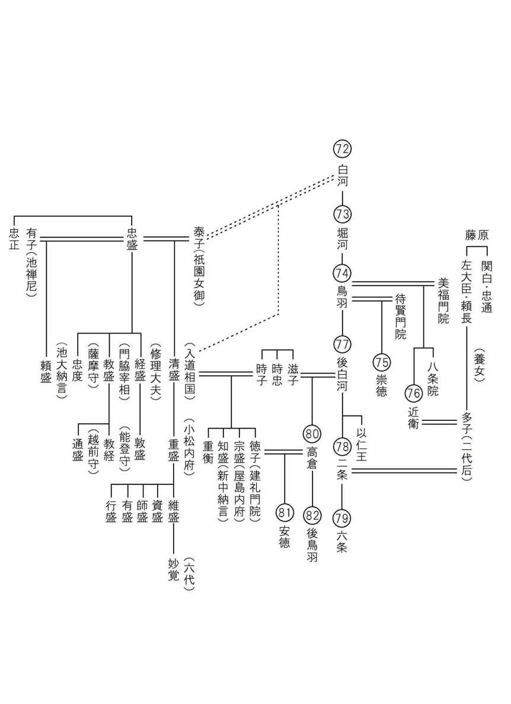

| これで読破！ 平家物語 巻第八 | |
| 三石由起子 | |
| genkosha (2014) | |
完訳 平家物語
百二十句本による
第七十一句から第八十句


第七十一句 四のみやそくゐ（四の宮即位）
四の宮即位
一
寿永二年七月二十四日の夜半ばかりに、法皇は按察の大納言資朝の卿の子息右馬頭資時ばかり御供にて、ひそかに御所を出でさせ給ひ、鞍馬寺へ入らせ給ひけるが、「ここもなほ都近くてあしかりなん」とて、笹の峰、解脱が谷、寂場房、御所になる。大衆起つて、「東塔へこそ御幸なるべけん」とていきどほり申すあひだ、「さらば」とて、東塔の南谷、円融房、御所になる。
かかるあひだ、武士も衆徒も円融房御所ちかく候ひて、君を守護したてまつる。院は天台山に、主上は平家にとられて西海へ、摂政は知足院に、女院の宮は八幡、賀茂、嵯峨、太秦、西山、かたほとりについて逃げ隠れさせ給へり。平家は落ちぬれども、源氏はいまだ入りかはらず。すでにこの京は主なき里とぞなりにける。開闢よりこのかた、かかることあるべしともおぼえず。聖徳太子の未来記にも、今日のことこそゆかしけれ。
法皇は天台山へわたらせ給ふと聞こえしかば、馳せ参り給ふ人々、「入道殿」とは前の関白松殿。「当殿」とは近衛殿。太政大臣、大納言、中納言、宰相。三位、四位、五位の殿上人。官加階にのぞみをかけ、所帯、所職を帯する人の、一人も漏るるはなかりけり。あまりに人参りつづいて、堂上、堂下、門外、門内、ひますきもなく満ち満ちたり。山門の繁昌、門跡の面目とぞ見えし。
同じき二十八日、法皇は都へ還御なる。木曾の冠者義仲、五万余騎にて守護したてまつる。近江源氏山本の冠者義高、白旗ささせて先陣つかまつる。この二十余年見ざりつる白旗の今日はじめて都へ入る。めづらしかりし事どもなり。
寿永二年七月二十四日の夜半、後白河法皇は、ただ按察大納言・資朝卿の子息である右馬頭・資時だけをお供にして、密かに法住寺殿を抜け出して鞍馬寺に入られた。それでも、
「ここでもまだ都に近い。不都合であろう。」
と、しかし、鞍馬寺も都に近すぎるので横川の笹の峰、解脱が谷、寂場房にお移りになった。
だが、大衆が起って、
「東塔にこそ御幸なさるべきだ。」
と、怒るので、
「さらば。」
と、比叡山東塔の明雲座主の坊へと移られた。
武士も衆徒も円融房の御所近くに参じて、法皇を守護申し上げる。
後白河法皇は比叡山に、主上（＝安徳天皇）は平家に取られて西海へ、摂政（＝藤原基通）は知足院に、女院の宮方は八幡、賀茂、嵯峨、太秦、西山などにお逃げになった。平家は都から落ちて行ったが、源氏はまだ京に入っていない。この京は、主人のない里になったのである。我が国の開闢以来、このようなことはなかった。聖徳太子が未来を予測して書かれたとされる『未来記』にも、今日のこのような状態が書かれていたかどうか、見てみたい気がする。
法皇が比叡山におわすと聞いて、馳せ参じたのは前関白・基房、摂政・基通であり、それを始めとして、太政大臣、大納言、中納言、宰相。三位、四位、五位の殿上人。出世に望みをかけて、所帯、所職を持つ者は、一人も漏れずに駆けつけた。あまりの人数が参上するので、寺の堂上も堂下も、あるいは門外、門内、立錐の余地もなく人で溢れかえっていた。山門の繁昌、門跡の面目は躍如と見えた。
同じく二十八日、法皇は都へと戻られた。木曽義仲の軍勢五万余騎が守護しての還御であった。近江源氏である山本冠者・義高が源氏の白旗を立てて先陣を務めた。この二十年余り見たことのない風景であった。本日、初めて白旗が都に入ったのである。珍しかりし事どもなり。
二
十郎蔵人行家、一万余騎にて宇治橋より京へ入る。陸奥の新判官義康が子矢田の判官代五千余騎にて丹波の国大江山を経て京へ入る。京中には源氏の勢みちみちたり。
法皇、法住寺殿へ入らせ給ふ。検非違使別当左衛門督実家、勘解由小路の中納言経房、三人、院の殿上の簀子に候ひて、行家、義仲を召して、「前の内大臣宗盛以下の平家の一類追罰すべき」むね、仰せ下さる。両人かしこまつて承る。「おのおの宿所なき」よし申せば、十郎蔵人行家は、法住寺殿の南殿と申す萱の御所を賜はりけり。木曾は、大膳大夫業忠が宿所、六条西洞院を賜はる。主上は外戚の平家にとられて、西海の波のうへにただよはせ給ふ御ことを、法皇御嘆きあつて、「主上ともに三種の神器、ことゆゑなく都へ返し入れたてまつれ」と仰せ下されけれども、平家もちひたてまつらねば、大臣殿以下参入して、「そもいづれの宮を位につけたてまつるべき」と僉議ありけるとかや。
十郎蔵人行家は一万余騎で宇治橋から京に入った。陸奥新判官・義康の子供である矢田判官代・義清は五千余騎で丹波国、大江山を経て入京した。京の町中は源氏の軍勢に満ち満ちていた。法皇は、法住寺殿にお入りであった。やがて法皇は、検非違使別当左衛門督・実家と、勘解由小路中納言・経房を前にして、義仲と行家に、
「前内大臣・宗盛以下の平家の一門を追罰せよ。」
と、お命じになったのである。
平家追討の院宣であった。二人は畏まってこれを承った。それぞれが、
「屋敷がありません。」
と、申し上げたので、十郎蔵人・行家は、法住寺殿の南殿に当たる萱の御所をいただいた。木曾義仲は、大膳大夫・業忠の屋敷であった六条の西洞院を頂いた。安徳天皇が、外戚の平家に取られて西海の波の上に漂っておられることを法皇はお嘆きになり、
「主上と共に三種の神器を都へ返還せよ。」
と、お命じになったが、平家が相手にしないので、
「どの宮にご即位していただこうか。」
と、大臣参加の公卿僉議が行なわれたとか。
新天皇の人選である。
三
高倉の院の皇子、先帝のほか三ところわたらせ給ひけり。二の宮をば平家の「儲の君にしたてまつらん」とて、具しまゐらせて西国へ下向す。
三、四はいまだ都にましましけるを、八月五日、法皇この宮たちを迎ひ寄せまゐらせ給ひて、まづ三の宮、五歳にならせ給ふを、法皇、「これへ、これへ」と仰せられければ、法皇を見まゐらせ給ひて大きにむつがらせ給ふあひだ、「とうとう」とて、暇を出だしまゐらせさせ給ひぬ。そののち四の宮、四歳にならせ給ふを、法皇、「これへ、これへ」と仰せければ、すこしもはばからせ給はず、やがて御膝へ参らせ給ひて、よにもなつかしげにてぞましましける。法皇御涙をながさせ給ひて、「げにも、そぞろならん者は、か様の老法師を見ては、などか慣れ気には思ふべき。これぞまことのわが孫にはありける。故院の幼いにすこしも違はぬものかな。かかる忘れ形見のましましけるを、今まで見たてまつらざることよ」とて、御涙にむせびおはします。
浄土寺の二位殿、そのころ「丹後殿」とて御所に候はれけるが、「さて、御譲りはこの宮にてわたらせ給はんや」と申されければ、法皇、「子細にや」とぞ仰せける。
内々御占のありけるにも、「四の宮位につかせ給ひなば、天下おだやかなるべし」とぞ申しける。
御母儀は七条修理大夫信隆の卿のむすめなり。中宮の御方に参りて宮仕ひしほどに、主上、夜な夜なこれを召されけり。うちつづき宮あまたいできさせ給ひけり。信隆の卿の御むすめあまたおはしけるなかに、「いかにもして一人后に立てばや」と思ふ心ざしおはしけり。この人、「白き鶏を千そろへて飼へば、かならずその家に后いできたるといふことあり」とて、白き鶏を千そろへて飼ひ給ひけるゆゑにや、御むすめ、皇子を生みたてまつり給ひけん。信隆の卿、内々はうれしう思はれけれども、中宮にも恐れをなしまゐらせ、平家にもはばかつて、もてなしたてまつることもましまさざりしを、太政入道の北の方、「くるしかるまじ。この宮たちをば育てまゐらせ、儲の君にもしたてまつれよ」とて、御乳母どもにつけてぞ育てまゐらせける。なかにも四の宮は、二位殿の舅法勝寺の執行能円ぞ養ひたてまつりける。能円、平家に連れて西国へ落ちしとき、あまりにあわてて、宮をも女房をも捨ておきたてまつり、西国へ落ちられたりけるが、能円途より人をのぼせて「女房、宮を具したてまつり、いそぎ下り給へ」とありければ、この女房、宮を具したてまつり、西京なる所まで出でられたりけるを、この女房の舅紀伊守範光これを聞き、いそぎ走り向かひて、「物について狂ひ給ふか。この宮の御運は、いま開かせ給はんずるものを」とて、とり留めまゐらせけり。
次の日、法皇より御迎ひの御車は参りたりけり。何事もしかるべきこととはいひながら、紀伊守範光、四の宮の御ためには、奉公の人とぞ見えたりける。
高倉院には安徳帝のほかに三人の皇子がおられた。二の宮は、
「儲の君（＝皇太子）に。」
と、平家が連れ出して、西国に下向なさっておられる。
都には三の宮と四の宮がまだ残っておられたが、八月五日に、法皇がこの宮方を迎え寄せられて、五歳の三の宮をご覧になり、
「これへ、これへ。」
と、お呼びになったが、法皇を拝見して非常にむずがられたので、法皇は、
「とうとう。」
と、仰せになり退出させてしまわれた。
次に四歳の四の宮をお召しになったところ、宮は少しも躊躇わずに、非常に懐かしげに法皇のお膝にお乗りになった。法皇は感涙して、
「げにも。幼い者がこのような老法師を見れば、慣れ親しもうと思えるものではない。これぞまことのわが孫にはありける。故院（＝高倉天皇）の幼い時と少しも違はぬ。このような忘れ形見がおられたのに、今まで会う事がなかったのがいかにも残念であった。」
と、御涙にむせびおわします。
その頃は、丹後殿と呼ばれて御所で後白河院の御寵愛を受けておられた浄土寺の二位殿が、
「それでは、この宮でよろしゅうございますか。」
と、申し上げると、法皇は、
「子細にや。」
との仰せであった。あれこれ言うまでもないという意味である。
内々で占いをさせたところ、
「この四の宮がご即位なされば、天下は穏やかに治まるでしょう。」
とのことであった。
母親は、七条修理大夫信隆の娘であった。建礼門院の女房として宮仕えしていた時、帝（＝高倉天皇）が夜な夜なお召しになったのである。続けて宮方がお生まれになった。信隆には娘が大勢いたが、
「何としてでも一人、后に立てたいものだ。」
と、お望みが深かった。
白い鶏を千羽揃えて飼えば、必ずその家から后が出る、ということを聞いて、飼っておられた。それで皇子がお生まれになったのだろう。信隆卿は、内心とても嬉しく思っておられたが、清盛の娘である中宮にも恐れを抱き、また平家にも憚って、大仰にお仕えすることをご遠慮申し上げていたのだが、太政入道・清盛の北の方（＝時子）が、
「苦しゅうない。この宮達をお育て申し上げて、東宮にもお就け申しあげよ。」
と、御乳母を付けて大事にお育てになったのだった。
中でもこの四の宮は、二位殿（＝時子）の兄である法勝寺執行・能円が養い親になっておられた。能円は、平家に従って西国へ落ちる時に、あまりにも慌てていたので、宮をも女房をも捨て置いたまま西国へ向かったのである。途中から人を京に上らせて、
「女房よ、四の宮をお連れして急いで下り給え。」
と言わせたので、女房は宮をお連れして西京という場所まで出られたのだが、この女房の舅である紀伊守・範光が急いで駆けつけて、
「気でも狂ったか。この宮の御運は、ただ今、開けようとなさっているものを。」
と、取り留めたのであった。
その翌日、法皇からのお迎えの車があったのである。何事も運命だとは言いながら、この紀伊守・範光は、四の宮の御ためには、「奉公の人」であった。
四
同じく十日、除目おこなはれて、木曾の冠者義仲、左馬頭になつて越後の国を賜はる。十郎蔵人は備後の国を賜はる。おのおの国をきらひ申す。木曾は越後の国をきらへば、伊予守になる。十郎蔵人は備後をきらへば、備前守になる。そのほか源氏十人受領す。検非違使、靱負尉、兵衛尉ども〔に〕なされけり。
同じく十四日、前の内大臣宗盛以下の平家の一類百六十三人が官職を罷めて、殿上の御簡をけづられけり。見る人涙をながさずといふことなし。そのなかに平大納言時忠、内蔵頭信基、讃岐の中将時実、この三人はけづられず。これは「三種の神器ことゆゑなく返し入れたてまつれ」と、かの大納言のもとへ仰せ下さるるによつてなり。
平家は、同じく十七日、筑前の国三笠の郡大宰府へこそ着き給へ。菊池の次郎隆直は都より付きたてまつり下りけるが、「大津山の関あけてまゐらせん」とて、いとま申す。肥後の国へ馳せ下り、わが城にひき籠り、召せども、召せども参らず。九国、二島の兵ども召されけれども、領状申しながらいまだ参らず。岩戸の少卿大蔵の種直ばかりぞ候ひける。
平家は安楽寺へ参り、歌をよみ、連歌をして、手向けたてまつり給ひけり。そのなかに、本三位の中将重衡、
住みなれしふるき都の恋しさは 神もむかしをわすれ給はじ
と泣く泣く申されければ、みな人袖をぞ濡らされける。
八月十日、除目が行われて、義仲は左馬頭に昇進して越後国をいただいた。十郎蔵人・行家は備後国を頂いた。だが、それぞれが頂いた国を嫌がったのであった。義仲は越後を嫌って伊予守となり、行家は備後を嫌って備前守となった。変更してもらったのである。そのほか源氏十人が受領した。検非違使や、靱負尉、あるいは兵衛尉などの役職に付いたのである。十四日には前内大臣・宗盛以下、平家の一門百六十三人の官職が停止されて、殿上に書かれた名前が削除された。見る人は皆、涙を流す。その中にあって、平大納言・時忠、内蔵頭・信基、讃岐中将・時実の三人の名前は削られずにそのまま残っていた。これは、
「三種の神器を返し奉れ。」
と、時忠大納言に申し入れていたので、その神器返還の交渉相手としてとっておいたからである。
八月十七日、平家は筑前国、三笠郡の大宰府に着いた。都から同行した菊池隆直は、
「大津山の関を開けて参りましょう。」
と、退出したまま故郷の肥後に馳せ下って、自分の城にひき籠ってしまった。そうして「召せども、召せども参らず」。
平家が召喚状を出しても、筑前国、岩戸少将・原田種直の他は、九州、壱岐、対馬の兵は誰一人駆けつけては来なかった。平家の人々は安楽寺に趣き、手向けに歌を詠み、連歌をなさった。本三位中将・重衡の歌はこうである。
住みなれしふるき都の恋しさは
神もむかしをわすれ給はじ
泣く泣くお詠みになったので、皆が涙で袖を濡らしたのである。
第七十二句 うさまふで（宇佐詣で）
宇佐詣で
一
八月十四日、都には四の宮、法皇の宣命にて、閑院殿にて即位し給ふ。「神璽、宝剣、内侍所なくして践祚の例、これはじめ」とぞうけたまはる。摂政近衛殿は、平家の聟にてましましけれども、西国へも御同心に下らせ給はぬによつてなり。「天に二つの日なく、地に二人の王なし」と申せども、平家の悪行によつて、都鄙に二人の帝ましましけり。三の宮の御乳母は、泣きかなしみて、後悔すれどもかひぞなき。帝王、位につかせ給ふこと凡夫のとかく思ひよらざるに、ただ天照大神、正八幡宮の御ぱからひとぞおぼえける。
八月十四日、都で四の宮は、法皇の宣命によって閑院殿にてご即位なさった。神璽、宝剣、内侍所という三種の神器がないままのご即位は開闢以来のことであるそうな。摂政近衛殿（＝藤原基通）は、平家の聟であったが、西国へも同行しなかったので、再任されて、そのまま留まっておられる。
「天に二つの日なく、地に二人の王なし。」
とは言うが、平家の悪行によって、都と鄙とに二人の帝が並び立ったのである。三の宮の御乳母は、泣き悲しんで後悔したが、甲斐のないことであった。帝王がご即位なさる経緯は、凡夫の思い及ばざるところであって、ただ天照大神、正八幡宮の御慮りと思われる。
二
むかし文徳天皇は、天安二年八月二十三日にかくれさせ給ふ。御子の宮たちあまた位に望みをかけておはしけるが、さまざまの御祈りどもありけり。一の宮惟喬の親王をば「大原の王子」とも申しき。王者の才量をも心にかけさせ給ふ。四海の安危はたなごころのうちに照らし、百王の理乱は心のうちにかけ給へり。されば、賢王、聖主の名をとらせおはすべき君なりと見えさせ給へり。二の宮惟仁の親王は、そのころ執柄忠仁公の御むすめ染殿の后の御腹なり。一門の公卿列してもてなしたてまつり給ひしかば、これもまたさしおきがたき御ことなり。かれは守文継体の器量たり。これは万機輔佐の臣相あり。かれもこれもいたはしくて、おぼしわづらはれけり。一の宮惟喬の親王の御祈りは、柿本の紀僧正真済とて、東寺の一の長吏、弘法大師の御弟子なり。惟仁の親王の御祈りの師には、外祖忠仁公の御持僧、比叡山の恵亮和尚ぞうけたまはられける。いづれもおとらぬ高僧たちなり。
真済東寺に壇を立て、恵亮は大内の真言院に壇を立ててぞおこなはれける。「恵亮和尚、失せたり」と披露をなす。真済僧正、ここにたゆむ心やありけん。恵亮、「失せたり」といふ披露をなし、肝胆をくだいて祈られけり。
帝かくれさせ給ひければ、公卿僉議のありさま、「臣等がおもんばかりをもつて選んで位につけたてまつらんこと、用捨私あるに似たり。万人唇をかへすことを知らず。競馬、相撲の折をもつて運を知り、雌雄によつて宝祚を授けたてまつるべし」と議定をはんぬ。
「この儀、もつともしかるべし」とて、同じ年の九月二日、二人の宮たち右近の馬場へ行啓あり。日ごろ心を寄せたてまつりし卿相雲客、たがひに引き分け、手を握り、心をくだき給へり。
御祈りの高僧たちいづれか疎略あらん。ここに王候卿相、玉の轡を並べ、花の袂をよそほひ、雲のごとくに重なり、星のごとくにつらなり給ひしかば、このこと希代の勝事、天下さかんなる見物なり。
すでに「十番の競馬あるべし」とて、競べ馬十番ありけるに、はじめ四番は惟喬の親王勝たせ給ふ。のちの六番は惟仁の親王勝たせ給ふ。「すなはち相撲の節」と聞こえしかば、上下市をなし見物す。大原の皇子惟喬の御方よりは、「名虎の衛門督」とて、六十人が力あらはしたるといふ大力をぞ出だされける。惟仁の親王の御方よりは、「善男の少将」とて、勢ちひさう、妙にして、片手にもあふべしとも見えぬ人、「御夢想の告げあり」とて、申しうけてぞ出だされける。
名虎寄せあはせて、ひしひしと取つてあふのけり。善男取つてさし上げ、二丈ばかりぞ投げたりける。されども、善男立ち直りて倒れず。善男つと寄り、えい声をあげて、名虎を伏せんとす。名虎もともに声を出だして、善男とつて伏せんとす。上下目をすます。されども名虎はかさにまはる。
善男内手に入りて見えければ、惟仁の御母儀染殿の后より、「いかに」「いかに」と御使、櫛の歯をひくがごとくに走りつづけて申しければ、恵亮和尚は大威徳の法を修せられけるが、「こは心憂きことかな」とて、独鈷をもつて頭を突き割つて、脳を砕いて芥子にまぜ、護摩にたき、黒煙をたてて一もみもまれたりければ、善男相撲に勝ちにけり。親王、位につかせ給ふ。「清和の帝」これなり。
のちには「水の尾の天皇」とぞ申しける。さてこそ山門には、いささかのことにも、恵亮脳を砕きしかば、二帝位につき給ふ尊意智剣を振りしかば、菅相霊ををさめ給ふとも伝へたり。これ法力といひながら、「天照大神、正八幡宮の御ばからひ」とぞおぼえたる。
昔の話である。文徳天皇（５５）が天安二年八月二十三日に崩御されると、大勢の皇子が皇位に望みをかけられて、様々なお祈りをなさった。中でも一の宮・惟喬親王は、「大原の王子」と申し上げ、王者の器量が備わっているとの評判が高かった。国内の安危を掌握しておられて、百代の王政の様を心で知ることができた。そこで、この方が賢王、聖主の名をお取りになる次の主上と思われたのである。また二の宮・惟仁親王は、当時の権力者である藤原良房の娘・染殿の后（＝明子）を母として一門の期待を担っていた。つまり、この方もまた、差し置いて考えることのできない親王であった。片や守文継体の器量を持ち、片や万機輔佐の臣相があった。つまり、一方は「法を守って国家を治める」資質があり、もう一方も「政務万端を補佐できる大臣を持って」おられたのである。どちらも捨てがたく、選考が難しかった。そこで、御祈りが繰り広げられた。
惟喬親王は、祈祷の師に東寺一の長吏（＝寺務を統括する僧）であった柿本の紀僧正・真済を立てた。弘法大師の御弟子である。
一方、惟仁親王は、比叡山の恵亮和尚を立てた。こちらは母方祖父・忠仁公（＝藤原良房）の御持僧である。いずれも劣らぬ高僧で、互いに一歩も譲らぬ構えであった。真済は東寺に祈祷の壇を立て、恵亮は大内の真言院に壇を立ててお祈りが始まった。だが、そこで、恵亮が、
「恵亮和尚、失せたり。」
と、死亡したという噂を流したのである。
真済僧正は、それを聞いて油断なさったのだろう。その後、恵亮は、肝胆を砕いてお祈りしたのであった。帝が崩御なさったので、公卿僉議が行なわれたが、
「臣下の我々が考えて、お選び申し上げご即位させ申し上げるのは、私情が絡むように思われる。きっと非難が出るに違いない。競馬と、相撲の優劣で運を知り、雌雄を決してご即位させ申し上げよう。」
と、結論に至った。
「この儀、もっともしかるべし。」
と、同年の九月二日、二人の宮達が右近の馬場へお出でになったのである。
日頃、それぞれの宮に心を寄せる卿相雲客達は、互いに引き分ける勝負に、手に汗を握り、心を砕いて見守っていた。まして、御祈りの高僧達は、一所懸命であった。ここに王候卿相が、玉の轡を並べて、花の袂を装い、雲のように重なって、星のように連なって御覧になるのであるから、これは希代の勝事となって、天下第一の見物であった。すでに、
「十番の競馬あるべし。」
とされて、競べ馬の十番勝負があったが、始めの四番は惟喬親王がお勝ちになり、後の六番は惟仁親王がお勝ちになった。
「引き続き相撲の勝負。」
となったので、上下の者が市をなすように見物した。
大原の皇子・惟喬親王から出されたのは、「名虎の衛門督」と呼ばれる六十人力の大力であった。惟仁親王からは、「善男の少将」が出た。背が低く、軽妙で、片手でも勝負にならぬと見えた男だが、夢のお告げがあったということで、引き受けて出たのであった。
名虎は善男に寄せて、ひしと取って仰向けに倒すと、それから掴んで差し上げ、二丈ほども投げ飛ばした。だが、善男は立ち直って倒れなかった。善男はつと寄って、えいと声をあげ、名虎を押し伏せようとした。名虎もまた声を出して、善男を掴み伏せようとした。いずれが劣るとも思われなかったが、名虎は大の男である。善男が危なく見えたその時、惟仁親王の母・染殿后は、何人もの使者を恵亮和尚の許に走らせた。
「こうでございます。」
「ああでございます。」
と、続けざまに報告が届く。
恵亮和尚は、その時、大威徳の法を修せられていたが、
「こは心憂きことかな。」
と、独鈷で頭を突き割ると、脳を砕いて芥子にまぜ、護摩を焚いた。
そうして、黒煙を立ててそれを一揉み、揉んで祈ったのである。
善男が勝ち、惟仁親王が皇位にお就きになった。すなわち清和天皇その人であった。その後、水尾天皇とお呼びする。そういうわけで、山門では、「恵亮が脳を砕いて、二の宮が帝位にお就きになり、尊意が智剣を振って、菅相（＝菅原道真）の霊を調伏した」と伝えられる。これは法力とは言うものの、「天照大神、正八幡宮の御計画」と思われる。
三
平家は西国にてこれを聞き、「やすからず。三の宮をも取りたてまつりて下りまゐらすべきものを」と後悔せられければ、平大納言時忠の卿のたまひけるは、「さあらんには、木曾が主にしたてまつりたる高倉の宮の御子、これは御乳人讃岐守重季が御出家せさせたてまつり、具しまゐらせ北国へ落ち下りたりしこそ、位にもつかせ給はんずらめ」とありければ、ある人申しけるは、「それは、出家の宮をばいかが位につけたてまつるべき」。時忠の卿のたまひけるは、「さも候はず。還俗の国王、異朝にも先蹤あらん。わが朝には、まづ天武天皇、いまだ東宮の御時、大友の王子にはばからせ給ひて、鬢髪を剃り、吉野の奥に忍ばせ給ひたりしかども、大友の王子を滅ぼして、つひに位につかせ給ひぬ。また、孝謙天皇も大菩提心をおこして御飾りをおろさせ給ひぬ。御名を『法基尼』と申せしかども、ふたたび位につき給ひて、『称徳天皇』と申せしぞかし。まして木曾が主にしたてまつりたる還俗の宮、子細あるまじ」とぞのたまひける。
話は戻る。平家は四国で後鳥羽天皇の即位を聞いて、
「「やすからず（＝残念無念）」。三の宮、四の宮も連れて来るべきだった。」
と、悔やんだ。平大納言・時忠卿は、
「お連れしたところで、都ではきっと別の手を考えただろう。木曽の義仲が主上として大事に申し上げる高倉の宮（＝以仁王）の御子がおられる。それは乳母子の讃岐守・重季が出家をさせてお連れし、北陸に下っておられる。その方を即位させたであろう。」
と、おっしゃった。
これは、巻四の「以仁王謀反」の物語に登場した方である。以仁王には大勢の子供がおられたが、その中の一人で、俗に「北陸の宮」とお呼びする。
これに対してある人が、
「それは出家をした方であるから即位はさせられないだろう。」
と、申し上げたが、時忠卿は、
「さも候はず。還俗した国王は、他国でも先例がある。我が国でもある。まずは天武天皇（＝天智天皇の弟・大海人皇子）がおられる。まだ、東宮でおられた時に、天智天皇の皇子・大友皇子と対立し、争いを避けて出家なさり、吉野山にお入りになった。そこで大友皇子は即位し、弘文天皇となられたが、大海人皇子は兵を集め、吉野から尾張、美濃の軍勢を率いて近江を襲い、弘文天皇を滅ぼして即位された。また、聖武天皇の姫宮・孝謙天皇の例がある。出家なさってお髪を下ろされ「法基尼」となられたが、再び即位して称徳天皇となられた。まして義仲が主上と仰ぐ方であるから、還俗の宮として問題にはされまい。」
と、おっしゃった。
称徳天皇は、道鏡を寵愛して皇位問題を紛糾させた女帝である。
水原一の解説を引く。
「平家としては都の即位を阻止できないという悲観的な意見で、平家の側で、北陸の宮即位の可能性を予想したという記述である。だが、歴史の実際は、この宮はもっと強力に義仲に押し立てられていた。広本系には、それが伺える。即位の問題の実際は、三の宮、四の宮、北陸の宮の三つ巴の様相を呈していたのであるが、『平家物語』の中で、その北陸の宮の伝がいつの間にか消えてしまった。「義仲の山門牒状」で見た通り、以仁王生存説が盛んに言われていた。義仲はその噂を利用し、あたかも自分の陣中に以仁王がおられる、以仁王の善政を自分が実行している、という姿勢で軍を進めていた。それが義仲の大義名分であった。おそらくは太夫坊覚明の策謀であったろう。しかし、実際には以仁王は存在せず、義仲は都に入る。その段階で義仲が押し立てたのが北陸の宮であった。北陸の宮は、重季に連れられて越中の宮崎に落ちのび、宮崎、石黒という越中の武士達に守られていた。義仲は、その宮崎一族と合体した段階で、この宮を押し立てたのであった。『玉葉』には、義仲が上洛して北陸の宮の即位を推薦した事実が書かれている。平家を追い落とした真の功労者は以仁王であり、その偉業を重んじてこの宮を即位させるべきだという理論である。かなり整然とした理論で、公家たちも認めざるを得なかった。
だが、後白河院は、初めから四の宮の即位を決めていて、義仲の助言を受け付ける気は全くなかった。北陸の宮など即位させれば、田舎武士の義仲に政治の中枢を握られてしまう。貴族達もまた、心情的には田舎武士の義仲に拒絶反応があったのである。だが、義仲の理屈は正論であるがゆえに厄介だった。そこで八百長の占いをさせて、四の宮「大吉」北陸の宮「大凶」としたが、これは義仲に感付かれてしまった。義仲は強硬に北陸の宮を推した。
当時の武士の中で、政治に立ち入って堂々と正論を主張したのは、清盛を別にすれば義仲だけである。頼朝は鎌倉にあって、朝廷には遠隔的な働きをしたのみであった。後に都に入る人気者の義経などは、簡単に後白河院の番犬にされ、政治問題に弁を振るうなど思いも寄らなかった。義仲のこの行為には目を見張る物がある。だが、『平家物語』の特に語り物系統ではそれには触れない。無論、義仲の主張とても覚明に吹きこまれてのことには違いない。ただ一つの疑問は、北陸の宮当人が、この時、都にいなかった事実である。宮は北陸にいるままであった。別名を「加賀の宮」というから加賀までは来ていたのかもしれない。不在のまま天皇の候補に立てられたという事実に、多少の疑惑を感じないではいられない。もしかすると、天一坊的な傀儡ではなかったか。ともかく、後白河院は強引に四の宮を立て、義仲はそれ以上拘泥しなかった。そればかりか、九月になって遅ればせながら北陸の宮が都に入ると、まるですれ違うように山陽道に出陣する。後白河院に迎えられた北陸の宮は、寿永二年の十二月、後白河院と義仲が衝突すると、ふいに姿を消してしまう。誠に不思議なことで、小説的な憶測を働かせば様々な想像ができる。おそらくはこの時期に、太夫坊覚明の政治的駆け引きや画策が挫折をしたのではないか。覚明と義仲との間に罅が入ったのではないか。そういう記述が、広本系や延慶本などには見えるのである。また、そうした本の中には、後白河院が再び帝になる（＝重祚）という案もあったとされる。あるいはまた以仁王の保護者であった八条院が、女帝として即位する案もあったとされる。日本の歴史に前例のない難局に立ったのである。幼少の天皇を立てるよりはるかに現実的な案であり、一概に否定できない説だろうと思う。結局は、幼帝を立てての後白河院の院政であった。
歴史にはデマや風説が付き物であるが、それは時間の経過と共に削ぎ落されてまとめられて伝えられる。語り物の『平家物語』は、そういう良くまとまった歴史物語で、理解しやすい歴史解釈が示されている。延慶本や広本系の異本類の記し方は、ごたごたと複雑に書かれて、文芸的にはそう面白いとは言えない。だが、それゆえにこそ、かえってその時代の姿が生々しく反映している。後には消えてしまう風説も、異本には消えないままで残されている。」
四
同じく九月二日、法皇より伊勢へ公卿の勅使を立てらる。勅使は参議脩範とぞ聞こえし。太上天皇の伊勢へ公卿の勅使を立てらるることは、朱雀、白河、鳥羽三代蹤跡ありといへども、みな御出家以前なり。以後の例、はじめとぞうけたまはる。
平家は筑前の国三笠の郡大宰府に都をたてて、「内裏つくらるべき」と公卿僉議ありしかども、いまだ都もさだまらず、主上、当時は岩戸の少卿大蔵の種直が宿所にぞましましける。人々の家々は、野中、田中なりければ、麻のころもは打たねども、「十市の里」とも言ひつべし。内裏は山の中なれば、「かの木の丸殿もかくやありけん」と、なかなか優なるかたもありけり。
まづ宇佐の宮へ行幸なる。大宮司公通が宿所、皇居になる。社頭は月卿雲客の居所になる。廻廊は五位、六位の官人、庭上には四国鎮西の兵ども、甲冑、弓箭を帯して雲霞のごとくに並みゐたり。古りにし朱の玉垣も、ふたたび飾るとぞ見えし。七日御参籠のあかつき、大臣殿御夢想の告げぞありける。御宝殿の御戸押し開き、ゆゆしうけだかげなる御声にて、
世の中のうさには神もなきものを なに祈るらん心づくしに
大臣殿夢さめてのち、胸うちさわぎ、あさましさに、
さりともと思ふ心も虫の音も よわりはてぬる秋の暮かな
といふ古歌を心ぼそげに口ずさみ給ひて、さて大宰府へ還幸なる。
後白河法皇は、九月二日のうちに伊勢神宮へ新帝即位の勅使を遣わした。その使いは参議脩範であった。藤原脩範は、信西入道の五番目の息子で後白河院の近臣である。太上天皇（＝上皇）が伊勢に公卿の勅使を立てたことは、朱雀、白河、鳥羽三代の前例にもあるが、それは皆、御出家以前であり、法皇ではなく上皇だった。ご出家の後に伊勢に勅使を遣わされたのは、これが初めてだそうである。
伊勢は、僧や尼を忌むので、江戸時代にも僧や尼の参詣を禁じていた。西行法師が、中まで入らずに遠くから忍んだという逸話が残っている。
平家は九州の政治の中心地である筑前の大宰府に到着し、そこに都を立てて内裏を作ろうと公卿僉議で決定したが、いまだに実現しない。帝は、まだ岩戸少卿・大蔵種直（＝原田種直）の屋敷を仮御所としておられた。平家の人々は野の中や田の中に分散して住んでいる。「麻のころもは打たねども、『十市の里』とも言ひつべし。内裏は山の中なれば、『かの木の丸殿もかくやありけん』と、なかなか優なるかたもありけり」は、「福原遷都」の描写と全く同じ文章である。いずれも『方丈記』からの引用である。
平家は、宇佐八幡宮へ行幸した。ここは八幡宮の最初の宮で、石清水八幡宮は宇佐から勧請した分社の第一であった。宇佐八幡宮は、宇佐氏と大神氏の両氏が奉仕していた。当時は、宇佐公通が大宮司であったので、その屋敷を皇居として安徳天皇をお迎えする。社殿には月卿雲客（＝公家）が入った。社殿の回廊には五位と六位の役人たち、庭先には四国、鎮西の武士達が、甲冑、弓箭を帯した武装で、雲霞のごとく並んでいた。誠に勇壮で、剥げかけた朱塗りの玉垣も再び賑やかになると思われた。だが、そこで七日の間、参籠したあかつきに、宗盛に夢のお告げがあったのである。御宝殿の戸が押し開かれて、重々しく気高い声がした。
世の中のうさには神もなきものを
なに祈るらん心づくしに
（世の中の憂さ（宇佐）には、この私も力及ばないというのに、何を一心に空しい祈りをここで続けるのか）
「心づくし」には「筑紫」という地名がかけられている。
夢から覚めた宗盛は、胸騒ぎを覚えて、浅ましさに思わず古歌を口ずさむ。
さりともと思ふ心も虫の音も
よわりはてぬる秋の暮かな
（そうであっても、一筋に縋るこの心も虫の音も、すっかり弱り果ててしまった秋の暮だよ）
心細く、やがて大宰府へとお帰りになるのであった。
この古歌は『千載集』にある藤原俊成の歌である。「さりとも」という副詞は、絶望的な状況の中で、一縷の望みをかける場合に、中世でよく使われた。
この話は、おそらく当時の大宮司、宇佐八幡の勢力が平家を見放して、源氏方に寝返る傾向にあったことを表わしている。大神氏から出た緒方維義が反平家の運動を展開し、九州の武士達に号令をかけていた。
第七十三句 をだまき（緒環）
緒環
一
さるほどに、九月十日あまりにぞなりにける。荻の葉わけの夕あらし、片敷く袖もしをれつつ、ふけゆく秋のあはれさは、「いつも」とはいひながら、旅の空こそしのびがたけれ。九月十三夜は名をえたる月なれども、その夜は都を思ひいづる涙に、われから曇りてさやかならず。九重の雲のうへ、ひさかたの月に思ひをのべしたぐひも、今の様におぼえて、薩摩守忠度、
月を見しこぞの今宵の友のみや 都にわれを思ひ出づらん
修理大夫経盛、
恋しとよこぞの今宵の夜もすがら ちぎりし人の思ひでられて
皇后宮亮経正、
わけて来し野辺の露ともきえもせで 思はぬ方の月を見るかな
あはれなりしことどもなり。
そうこうするうちに、九月の十三夜になった。
「八月十日あまり」と言えば、「八月の十五夜」、「九月十日あまり」と言えば「九月の十三夜」である。八月の十五夜と共に九月の十三夜は、名月の代表で、「二夜の月」と言う。後にはこの両夜の月を観賞しないと「片月見」と呼ばれて忌むことさえされた。
名文が続く。「荻の葉わけの夕あらし、片敷く袖もしをれつつ、ふけゆく秋のあはれさは、」「いつも」の事とはいえ、旅の空ほど憐れで寂しいものはない。九月の十三夜は、名だたる名月だが、その夜は都を思い出す涙で自然に景色が曇って、清かにも見えぬ月である。宮中の雲の上にあった久方の月に思いを寄せた頃のことが、今のように思われて、薩摩守・忠度が歌を詠む。
月を見しこぞの今宵の友のみや
都にわれを思ひ出づらん
（去年、一緒に月を眺めたあの友ばかりは、都で私を偲んでくれていることだろう）
「こぞの今宵」は、九月九日の菊の宴を詠んだ菅原道真の詩の言葉である。道真が大宰府に流された思いと平家の流浪を重ね合わせたものだろう。これによって、道真の思いが平家の悲しみと二重写しになって伝えられる。
経盛の歌。
恋しとよこぞの今宵の夜もすがら
ちぎりし人の思ひでられて
（恋しいことだ。去年のこの夜に、一晩中、契った人が思い出される）
これも「こぞの今宵」で道真の詩を踏まえている。
経正の歌。
わけて来し野辺の露ともきえもせで
思はぬ方の月を見るかな
(難路を踏み分けて来た道中の野辺の露のように消えもしなかった我が命は、今、思わぬ場所で名月を見ていることだ)
平家は武人であったが、貴族でもあった。名月には貴族の夜を過ごす平家の公達であった。
二
豊後の国は刑部卿頼輔の国なりければ、子息頼経を豊後の国の代官に下されけり。刑部卿、頼経のもとに脚力を下し給ひて、「平家は宿報尽きて神明にも放たれたてまつり、君にも捨てられまゐらせて、波の上にただよふ落人となれり。しかるを、鎮西の者ども受け取り、もてなすこそ奇怪なれ。当国においてはしたがふべからず。一味同心して、平家を追ひ出だすべし。これ頼輔が下知にあらず。一院の勅諚なり」とぞのたまひける。頼経の朝臣、この様を当国の住人緒方の三郎維義に下知せられけり。かの維義はおそろしき者の子なり。
その時の豊後の状態はこのようなものだった。豊後国は刑部卿頼輔（＝藤原頼輔）の領国であり、当時は七十二歳。嫡子の頼経が代官として赴任していた。
『平家物語』にはそうあるが、実際は息子ではなく孫の代になっていた。この一家は和歌と蹴鞠（＝飛鳥井流）の家として知られている。
後白河院はこの頼輔に指令を出した。
「平家の命運は尽きて、神明にも見放され、帝からも捨てられて、ただ波の上を漂う落人となっている。それなのに鎮西の者どもがこの一族を受け取って、世話をしていることは奇怪である。貴国においては従ってはならぬ。心を合わせて平家を追討すべし。これは頼輔の下知ではない。後白河院の勅諚である。」
頼輔は息子に平家追討を飛脚で指示し、息子頼経は直ちに豊後の国の実力者である緒方三郎維義にそれを命じたのであった。
さて、この緒方三郎維義には出生にまつわる恐ろしい伝説がある。
三
豊後の国の片山里に、ある者の一人娘の、いまだ夫もなかりけるところに、男、夜な夜なかよひけり。月日をおくるほどに、身もただならずなりにけり。母これをあやしんで、「なんぢがもとへかよふ男はいかなる者ぞ」と問ひければ、「来るをば知れども、帰るをば知らず」と申す。母教へていはく、「さらば、あひかまへて、朝帰らん時を知つて、しるしをつけて、行かん方をつないでみよ」とぞ教へける。
女、母の教へに従ひ、あかつき起きて帰る男を見れば、水色の狩衣をぞ着たりける。狩衣の頸のうへに針を刺しつつ、しづの緒環をつけて、経てゆく方をつないでみれば、豊後の国と日向の国とのさかひ、祖母岳といふ岳の腰に、大きなる岩屋のうちにぞ入りにける。
うちを聞けば、大きなる声にて叫ぶ声しけり。女、岩屋の口にゐて、「わらはこそこれまで参りてさぶらへ。出でさせ給へ。対面したてまつらん」と言ひければ、岩屋のうちより大きなる声にて答へけるは、「われはこれ凡夫にあらず。なんぢわが姿を見つるものならば、肝魂も身にもそふまじきなり。いそぎそれより帰るべし。なんぢが孕めるところの子は男子なるべし。弓矢を取つて、九国、二島に並ぶ者あるまじきぞ。われは今宵、なんぢがもとに行きて傷をかうむれり」と申せば、女かさねていはく、「さこそ深く契りまゐらせしぞかし。たとひいかなる姿にてもおはせよ、なじかはくるしかるべき。対面したてまつらん」と申せば、岩屋のうちより、五丈ばかりなる大蛇にてぞ出でける。「狩衣の頸のうへに刺す」と思ひつる針は、大蛇の喉笛にぞ刺したりける。女、まことに肝魂も身にそはず。召し具したる所従ども、をめいて逃げ去りぬ。
件の大蛇と申すは、日向の国に崇敬せられける高知尾の大明神これなり。
女帰りて、いくほどなくて産してけり。とりあげ見れば、まことに男子なり。これを七歳まで育てたれば、並びなき大力にてぞありける。いまだ幼稚の者の、普通の男よりも勢も大きに、丈も高かりけり。十一歳と申すに、母方の祖父、元服せさせて、名をば「大太」とぞつけたりける。夏も、冬も、足手に大きなるあかがり、ひますきもなく切れて、絶えざりければ、人みな「あかがり大太」とぞ申しける。
かの緒方の三郎はあかがり大太が五代の孫なり。
昔、豊後の片田舎に住む未婚の娘のもとに夜な夜な男が通って来た。日が重なって娘は身籠り、母親がこれを怪しんで、
「お前の許に通って来るのはどういう男か。」
と、尋ねると、
「来るのは分かりますが、どう帰るのかが分かりません。」
と、答えるのであった。そこで母親は、
「それなら、朝に帰る時に、印を付けてどこに帰るのかを調べてみなさい。」
と、素性を知るように教えたのであった。
娘は母に教えられた通り、明け方に帰る男を見ると、水色の狩衣を着ているのであった。その狩衣の襟に針を刺して、その針にしずの緒環をつないでおいた。緒環とは、麻の糸を輪状に巻いた糸の束である。その糸を辿りながら後をつけて行くと、豊後国と日向国との国境にある祖母岳の中腹の大きな岩屋に入って行った。そうして、中から大声で叫ぶ声がしたのである。娘が岩屋の入り口で、
「私がここまで参りましたよ。出て来て下さいませ。お目にかかりたいのです。」
と、言うと、岩屋の中から大きな声で、
「私は普通の男ではない。お前が私の姿を見れば、魂が身体から抜けて死んでしまうぞ。急いで帰れ。お前が孕んでいる子は男子である。弓矢を取って、九国（＝九州）、二島（壱岐と対馬）に二人といない武士となる者だ。私は今宵、お前の所に行って、傷を負ったのだ。」
と、答えたのである。女は重ねて、
「それほど深く契った間柄なのですよ。たとえどのようなお姿であれ、問題ではありません。お目に掛かりたいのです。」
と、言うと、岩屋の中から五丈ほどもある大蛇が出て来たのであった。
狩衣の襟に刺したと思った針は、大蛇の喉笛に突き刺されていたのである。女は、本当に魂が身体から抜けてしまった。連れて行った家来達も声を上げて逃げ去った。その大蛇の正体は、日向国で崇敬されていた高知尾の大明神であった。娘は帰って、やがて子を生んだ。取り上げて見ると、本当に男子であった。七歳まで育てると、並びなき大力男に成長した。まだ子供だというのに、大人の普通の男より身体も大きく、背も高かった。十一歳で母方の祖父が元服させて、名を「大太」とつけた。大太は夏も、冬も、足手に大きな「あかがり（＝あかぎれ）」があったという。いつでも、それがあったので、皆が「あかがり大太」と呼んだ。
これは、蛇の鱗模様のことである。
かの緒方三郎は、この「あかがり大太」の五代目の子孫だったのである。
水原一の解説を引く。
「豊後と日向との国境にある祖母岳は、霊山である。そこには豊玉姫が祭られているという言い伝えもある。豊玉姫は、邇邇芸命の后で、竜王の娘である。龍の姿で出産するのを見られて海に帰ったと伝えられる。この大蛇の話は、蛇神婚姻譚と言われる説話の一つで、あちこちに同じような話が伝わっている。代表的な物が『古事記』にある三輪山の大物主神伝説である。糸を手繰っていったところ、男が山の麓を三巡り廻ったので山の名前を「三輪山」と名づけた。これが蛇神婚姻譚の内、最も有名な話なので、同様の糸巻きを使って神の所在を知る話を「三輪山型」と呼ぶ。別の系統では加茂川の神の話がある。川に丹塗りの矢（＝赤く塗った矢）が流れて来る。その矢を娘が拾い上げて部屋に置いておくと、その矢が男になって懐胎する。これは「丹塗り矢型」と呼ばれる。
『平家物語』のこの話は蛇神婚姻譚「三輪山型」の典型である。緒方氏の先祖は大神氏であった。三輪山の豪族が宇佐に入り、その子孫に緒方氏が出た。大和の伝説が九州に伝わって根を下ろしたのだろう。九州には、このような伝説があちこちにあり、山や川や沼の神はだいたい蛇か龍である。それが里の女に通って子供を産ませるのである。源平のこの時代には、河野通清という男の話も伝わる。早くに平家を離れ、壮絶な討ち死にをした男であるが、その息子の通信は、この後の『平家物語』に登場し、源氏方として活躍する。四国の伊予水軍の頭であった。河野通清は、母親が三島明神に参籠し、大蛇と交わって生まれたので、顔や脇に鱗の模様があったと言われる。英雄豪傑の出生談を神の落し胤として語るのも武士の伝説にはよくあった。ここでは緒方維義を説明するのに、その先祖が大蛇の威力を受け継いでいたと紹介している。」
四
かかる不思議なる者の末なりければ、「九国、二島をも、われ一人して討ち取らばや」なんどと、常は申しける。かの緒方の三郎は、国司の仰せを「院宣」と号し、「院宣にしたがはんともがらは、維義を先として、平家を追ひ出だしたてまつれ」と、九国、二島をあひもよほしければ、九国、二島にさもしかるべき者ども、みな維義にしたがひつく。平家は「内裏つくるべき所やある」とたづねられけるところに、この事どもを聞きて、「いかがすべき」とてさわがれけり。平大納言のたまひけるは、「緒方の三郎は小松殿の御家人なりければ、小松殿の公達一人むかはせ給ひて、こしらへて御覧ぜよ」とのたまへば、小松の新三位の中将、五百余騎にて、豊後の国へうち越えて、「参るべき」よしこしらへ給へども、維義さらにしたがひたてまつらず。「君をもやがて取り籠めたてまつるべう候へども、何ほどのことかわたらせ給ふべきなれば、ただ帰らせ給ひて、一所にていかにもならせ給へ」とて、追つ返したてまつる。
そののち、子息野尻二郎維村をもつて、緒方の三郎、大宰府へ申しけるは、「まことに年ごろの主にてわたらせ給へば、重恩をかうむりて候ひき。されば兜をぬぎ、弓をもはづいて降人に参るべう候へども、一院の勅諚にて候ふうへは力およばず候。すみやかに九国のうちを出でさせ給へ」とぞ申したる。平大納言時忠の卿、維村にいで向かひ、のたまひけるは、「わが君は天孫四十九世の正統、人皇八十一代の帝にてわたらせ給ふ。天照大神、正八幡宮もいかでか君をば捨てまゐらせ給ふべき。なかんづく、故大相国、保元、平治両度の朝敵をたひらげしよりこのかた、不次の賞を賜はり、天下をたなごころに握り給ひしときは、鎮西の者どもをば内ざまにこそ召されしか。それに、当国の者ども、頼朝、義仲にかたらはれて、『しおほせたらば、国を預けん』『庄をとらせん』なんどといふことを、まことと思ひて、その鼻豊後［＊「はなびんご」と有るのを他本により訂正］が、彼が下知にしたがはんこと、しかるべからず」とぞのたまひける。豊後の国司、刑部卿三位頼輔は、きはめて鼻の大きにおはしければ、かくのたまひけるなり。
維村、豊後へ帰りて、父にこのよし申しければ、緒方の三郎、「こはいかに。昔は昔、今は今にてこそあれ。その儀ならば、すみやかに追ひ出だしたてまつらん」とて、大勢にて豊後をうちたつと聞こえしかば、平家の侍ども、「向後傍輩のために奇怪に候。召し取り候はん」とて、源大夫判官季貞、摂津の判官盛澄三千余騎にて、筑後の国竹野城に行きむかつて、三日たたかふ。されども緒方は多勢なりければ、散々に討ち散らされて引きしりぞく。
維義は、このように不思議な男の五代目の子孫なので、
「九州や離島までも、自分が一人で平らげて統率しよう。」
と、大きな野心を常に語っていた。
そういう男なので、国司であった父の命令を、勝手に「院宣」として触れまわり、
「院宣に従おうと思う輩は、この維義を先として、平家を追い出せ。」
と、九州、二島を説得して、そこらの武士とてもなかなかの強兵揃いであったのに、みな味方につけてしまった。
平家が、
「内裏を作る場所がどこかにあるか。」
と、尋ねたところ、こうした状況を知ったので、
「いかがすべき。」
と、騒ぎ出した。
時忠が、
「緒方三郎・維義は、小松殿（＝重盛）の御家人だったはずだ。小松の家の公達を一人、説得に向かわせよ。」
と、重盛の子・資盛を説得に向かわせた。
緒方一族は、九州のあちこちに広がり、維義自身は、竹田の辺りにいた。竹田は「荒城の月」に謡われた岡城の辺りである。
新三位中将・資盛は、五百余騎で豊後国を越え、やって来た理由を述べて説得にかかったが、維義は全く従おうともしないのである。それどころか、
「すぐにあなた（＝資盛）を捕えてもいいのだが、理由があって来たのでしょうから帰してあげます。一門と共に覚悟をお決めなさい。」
と、追い返したのであった。
そうして、今度は緒方が子息である野尻維村を使いとして大宰府に寄こした。口上は、
「代々の主君であり、御恩もあることですから、兜も脱ぎ、弓も置いて降伏すべきところですが、何分にも院のご命令であるから力及ばず、従わざるを得ない。速やかに九州から立ち去るように。」
と、申し上げた。
これに対して平時忠は、切り返す。維村と面会して、
「我が君（＝安徳天皇）は、天孫四十九世の正統の帝、人皇八十一代の帝である。天照大神も、正八幡宮も決してお見捨てになるはずがない。特に、亡き清盛公が保元、平治の二度の合戦で、朝敵である源氏を平らげて以来、最高の御褒美を頂き、天下を掌に握った際には、九州の武士達を身内のように取り立ててやったのだ。しかるに、お前たちは頼朝や義仲にまんまと担がれて、「事が成就したら国を預けよう。」「荘園をやろう。」などという甘言に乗って、「鼻豊後」の命令に従うとは怪しからんではないか。」
と、おっしゃった。
豊後の知行国司である刑部卿三位・頼輔は、非常に鼻の大きい男だったので、それを揶揄したのであった。維村が、豊後に帰って父に報告すると、緒方三郎は、
「こはいかに。昔は昔、今は今ではないか。そのつもりなら、すみやかに追い出してやろう。」
と、大勢で豊後を出発した。それを聞いた平家の侍達は、
「この後の同僚たちへの悪影響を考えると、不都合なことこの上ない。召し取りましょう。」
と、源大夫判官・季貞、摂津判官・盛澄が三千余騎で、筑後国、竹野城に行き向かって三日戦った。
だが、緒方は多勢であったために、散々に討ち散らされて引き退いたのであった。
五
平家は、「緒方三郎維義が、三万余騎にて、すでに寄する」と聞こえしかば、取るものも取りあへず、大宰府をこそ落ち給へ。駕輿丁もなければ玉の御輿をうち捨てて、主上手輿に召されけり。国母をはじめまゐらせて、やごとなき女房たち、袴のそばを取り、大臣殿以下の公卿殿上人、指貫のそばをはさみ、水城の戸をたち出でて、住吉の社を伏し拝み、徒歩はだしにて、「われ先に」「われ先に」と筥崎の津へこそ落ちゆきけれ。をりふし、降る雨車軸のごとく、吹く風砂をあぐるとかや。落つる涙、降る雨、われていづれも見えざりけり。筥崎、香椎、宗像伏し拝み、主上、垂水山、鶉浜なんどといふ嶮難をしのがせ給ひて、眇々たる平地へぞおもむかれける。いつならはしの御ことなれば、御足より出づる血は、砂を染め、紅の袴は色を増し、白き袴は裾紅にぞなりにける。かの玄奘三蔵の流沙葱嶺をしのがれけんも、いかでかこれにはまさるべき。されどもそれは求法のためなれば、来世のたのみもありけん。これは怨敵のゆゑなれば、後世のくるしみ、かつ思ふこそかなしけれ。
原田の大夫種直二千余騎にて、送りに馳せまゐる。山鹿の兵頭次秀遠数千騎の勢にて、平家の御迎ひに参るよし聞こえしかば、種直はもつてのほかに不和の事ありければ、「種直はあしかりなん」とて途よりひきかへす。
芦屋の津といふ所をすぎ給ふにも、「いにしへ、われわれが都より福原へかよふとき見なれし里の名なれば」とて、いづれの里よりもなつかしう、あはれをぞもよほされける。
「新羅、百済、高麗、契丹までも落ちゆかばや」とは思へども、波風むかうてかなはねば、兵頭次秀遠に具せられて、山鹿の城にぞ籠られける。山鹿へも敵寄すると聞こえしかば、海士の小舟にとり乗りて、夜もすがら豊前の国柳が浦へぞわたり給ふ。
平家は、
「緒方三郎維義が三万余騎を率いて、すでに押し寄せて来る。」
と聞いて、取るものも取りあえず、急遽、大宰府から落ちて行った。
輿を担ぐ駕輿丁がいない。玉の御輿を運ぶ暇もなく、安徳天皇は手輿にお乗りになった。建礼門院を始め、高貴な女房達も徒歩でお逃げになる。大臣殿以下の公卿殿上人が指貫の裾をたくしあげ、水城の戸（＝関所）を過ぎて、そこで住吉の社を伏し拝み、徒歩で、
「われ先に。」
「われ先に。」
と、筥崎の津へと落ちて行った。
惨憺たる逃避行である。折しも降る雨は車軸のごとく、吹く風は砂を巻き上げたという。落ちる涙も、降る雨も、風に割れてどちらも見えない。筥崎、香椎を過ぎて、宗像神社を伏し拝み、帝も垂水山、鶉浜のような険しい難所をお通りになる。そうしてやっと、眇々たる平地へとむかったのであった。馴れない徒歩での旅であるから、足から出る血が砂を染め、紅の袴は色を増して、白い袴を着ている者は、裾に血が滲んで赤くなった。高貴な方々があちこちから血を流しながらの移動なのである。玄奘三蔵が旅をした流沙葱嶺の道もこれ以上ではあるまいと思われた。玄奘三蔵は求法のためであるから来世への頼もしさもあったろうが、平家一門には後世の苦しみが思われるばかりで、悲しいことであった。
原田種直は平家に忠実な武士で、二千余騎でお送りに馳せ参じた。山鹿の兵頭次秀遠は数千余騎で迎えに来たのだが、原田と山鹿とは仲が悪かった。種直は、
「同心するのはつまらぬ。」
と、途中から引き返してしまった。
主従関係の強さは保たれていても、武士同士の関係は弱く希薄であった。それがうかがえる一文である。
「芦屋の津」という場所を過ぎた。
「昔、京から福原に通う時に見た同名の懐かしい地名である。」
と、何にも増して懐かしさがこみあげて、しみじみとした。
人々は悲壮な思いで、
「新羅、百済、高麗、契丹までも落ちて行きたい。」
とは思ったが、波風が激しくて進めないので、兵頭次秀遠に引率され、一旦は山鹿の城に落ち着いた。だが、そこにも敵が押し寄せると言うので、今度は小舟に分乗して、夜の間、ずっと漕ぎ通して豊前国、柳が浦へ渡ったのである。
平家は九州の武士たちにも背かれてしまった。柳ヶ浦では、重盛の三男にあたる左中将清経という人物が平家の前途を悲観して入水するという事件まで起きた。
第七十四句 やなぎのうら（柳の浦落ち）
柳の浦落ち
平清経は話題のない人物である。合戦の手柄もない。この場面で自殺したのも、実に些細な出来事のように思われるが、能には、この清経を扱った作品がある。省いては語れない人物なのである。
一
さるほどに、小松殿の三男左中将清経は、ある夜船の屋形にたち出でて、なにごとにも思ひ入り給へる人にて、心をすまし、横笛の音とり朗詠して、こしかたゆく末のことども、のたまひつづけて、「都をば源氏がために追ひ落され、鎮西をば維義がために攻め落され、網にかかれる魚のごとし。いづちへ行かばのがるべきかは。ながらへはつべき身にあらず」。しづかに経をよみ、念仏して、つぎに海にぞ入り給ふ。男女泣きかなしみけれどもかひぞなき。
そうこうするうちに、小松殿の三男である左中将・清経は、ある夜、船の屋形に出ていた。何でも思い込む人で、心を澄まして横笛の音を取り、朗詠しながら過去と将来とを色々と語ると、
「源氏のために都を追われ、九州は維義に攻め落とされて、網にかかった魚のようだな。どこへ逃れようと言うのか。生き果せる身でもない。」
と、静かに経を読み、念仏して、次には海にお入りになった。
男も女も泣き悲しんだが、甲斐もなかった。
重盛の一家（＝小松一門）は、平家の前途を見越して、死を早める運命を担っている。父親の重盛は、平家全盛の時代に早くも平家の滅亡を予言して、滅亡を見るならいっそ早く死にたい、と熊野の神に願って死んだ。長男の維盛は、都落ちで妻子と別れたが、この後（＝一の谷の合戦の後）熊野の沖に入水する。これも、平家の前途を見限っての入水である。清経が大宰府を追われて漂う船中で入水をするのも、小松一門の悲観的な歴史観を体現したからである。
水原一の解説を引く。
「「柳ヶ浦」には、二か所の候補地があげられる。一つは北九州市の門司であり、もう一つは宇佐の駅館川という川の河口部である。どちらであるか、決定はできないが、門司には「御所跡」がある。駅館川の河口には「清経入水」の伝説が残っているし、日輪寺には清経の妻が家来と共に清経を弔って建てたという言い伝えがある。」
二
柳浦にも内裏つくるべき僉議ありしかども、分限なければつくられず。また長門より寄すると聞こえしかば、海士の小舟に乗り、海にぞ浮かび給ひける。長門の国は新中納言知盛の国なりけり。目代は紀伊の刑部大夫道資といふ者なり。「平家の、小船に乗り給へる」よしを聞いて、安芸、周防、長門三箇国の材木積みたる船ども百余艘、点じてたてまつる。これによりて、讃岐の屋島にうち渡り給ふ。阿波の民部成能が沙汰にて、四国のうちをもよほして、屋島の浦にかたのごとくの板屋の内裏や御所をぞ造られける。そのほどは、あやしの民の屋を皇居とし、船を御所とぞさだめける。大臣殿以下の人々、海士の苫屋に日を暮らし、しづがふしどに夜をかさね、龍頭鷁首を海中に浮かべ、波のうへの行宮はしづかなる時なし。
月をひたせる潮のふかきうれひにしづみ、霜をおほへる葦の葉のもろき命をあやぶむ。洲崎にさわぐ千鳥の声は、あかつきのうれひを増し、そばひにかかる梶の音、夜半に心をいたましむ。白鷺のとほき浦に群れゐるを見ては、「源氏の旗をあぐるか」とうたがひ、夜の雁のはるかの空に鳴くを聞いては、「兵船を漕ぐか」とおどろく。
晴嵐はだへををかし、翠黛紅顔の色やうやうにおとろへ、蒼波まなこをうがち、外土望郷の涙おさへがたし。
翠帳紅閨〔に〕ことなる埴生の小屋のあらすだれ、薫炉のけぶりにかはれる葦火たく屋のいやしきにつけても、女房たち、つきせぬ物思ひに紅の涙せきあへ給はねば、翠黛みだれつつ、その人とも見えざりけり。
柳ヶ浦にも内裏を作るべきだという僉議があったが、費用がないので作られなかった。また、源氏が長門から寄せて来ると聞いたので、海士の小舟に乗って、再び海に浮かんだのであった。
長門国は、新中納言・知盛の国であった。目代は、紀伊の刑部大夫・道資である。平家が、小船に乗ったと聞いて、安芸、周防、長門三国の材木を積んだ船、百余艘を出した。これで平家は讃岐国の屋島に渡ったのである。
阿波の民部・成能は、四国の内を検討し、屋島の裏に型通りの板屋の御所や内裏を造った。完成するまでは下賤の者の屋敷を皇居とし、船を御所と定めた。大臣殿（＝時忠）以下の人々は、海士の苫屋に日を暮らし、賤しい臥所に夜を重ねて、船を海中に浮かべていた。波の上の行宮は静かな時もなかったのである。月を浸した潮の深い憂いに沈んで、霜を被った葦の葉のような脆い命を危ぶんでいた。洲崎に騒ぐ千鳥の声が、暁の憂いを増して、断崖に響く梶の音で、夜半の心は傷んだ。白鷺が遠くの浦に群れ居るのを見れば、
「源氏が旗を上げたのか。」
と、疑い、夜に雁が遥かな空で鳴くのを聞けば、
「源氏の兵が船を漕いで寄せて来るのか。」
と、驚く暮らしである。
晴れた日の潮風は肌に寒く、美しい方々の容色も衰えた。蒼々とした海を眺めて悲嘆に目が落ちくぼみ、都から遠く離れた外地にあって、望郷の涙は抑え難かった。翠帳紅閨の御殿とは異なる埴生の小屋の荒簾、芳しい香炉の煙に代わる葦火を焚く小屋の賤しさにつけても、女房達は尽きせぬ物思いに紅涙をしぼった。あれほどの容貌に優れた方々が、まるで別人のように見えた。
水原一の解説を引く。
「成能は阿波の豪族で、古くから平家に仕える重臣の一人である。福原の和田の泊での築港工事は、成能が奉行として完成させた難事業であった。姓は田口である。高松の北東にある台地・屋島は、現在は陸地と繋がる半島であるが、昔は名前の通りの島であった。平家はここに御所を造って勢力回復を図る。
内裏ができるまで、付近の民屋や船を住まいとした暮らしは、大変な名文で書かれているが、これは『六代勝事記』の文章である。高倉天皇から後堀河天皇に至るまでの六代の歴史を仮名文で綴った物語である。「龍頭鷁首」以下は百二十句本で「都落ち」の個所で書かれた。「翠帳紅閨にことなる埴生の小屋のあらすだれ、薫炉のけぶりにかはれる葦火たく屋のいやしきにつけても」以下は、土御門院が土佐にお遷りになった文章から取られた。『平家物語』は先行の文学を巧みに取り入れて名文で綴るのである。」
第七十五句 よりともゐんぜん申（頼朝院宣申）
頼朝院宣申
一
鎌倉の兵衛佐頼朝は、「都に上らんこともたやすからじ」とて、ゐながら征夷将軍の宣旨をかうむる。御使には、左史生中原の康定とぞ聞こえし。康定は家の子二人、郎等十人具したりけり。
寿永二年十月四日、康定鎌倉へ下着す。兵衛佐のたまひけるは、「頼朝は流人の身なりしかども、武勇の名誉長ぜるによつて、今はゐながら征夷将軍の宣旨をかうむる。いかでか私にては賜はるべき。鶴が岡の社にて賜はるべし」とて、若宮へこそ参られけれ。
八幡は鶴が岡に立ち給へり。地形石清水にちがはず。廻廊あり、楼門あり。つくり道十余町見くだしたり。
「そもそも院宣をば、誰してか賜はるべき」と評定あり。「三浦の介義澄して賜はるべし」と評定をはん〔ぬ〕。この義澄と申すは、三浦の平太郎為嗣が五代の孫、三浦の大介義明が子なり。父義明は君の御ために命をすてたる者なれば、これによつて義明が黄泉の冥闇を照らさんがためとぞおぼえたる。
義澄も、家の子二人、郎等十人具したりけり。二人の家の子は、和田の三郎宗実、比企の藤四郎能員［＊「よしさだ」と有るのを他本により訂正］なり。郎等十人は大名十人して、にはかに一人づつしてしたてけり。十二人みなひた兜なり。義澄は褐の直垂に黒糸縅の鎧着て、いかものづくりの太刀はき、大中黒の矢負ひ、塗籠籐の弓わきばさみ、兜をぬぎ高紐にかけ、膝をかがめて院宣を受け取りたてまつる。
「誰そ、名のれ」と康定申しければ、〔兵衛佐の「佐」の字にやおそれけん、〕「三浦の介」とは〔名のらで、本名を〕「三浦の荒次郎義澄」とこそ名のりけれ。
兵衛佐、院宣を受け取りたてまつり、覧箱をひらき、院宣を拝したてまつる。箱に沙金百両入れてぞ返されける。やがて若宮の拝殿にて、康定に酒すすめらる。斎院の次官親能、勧盃す。そのとき、馬三匹ひかる。一匹は鞍置いたり。これは大宮侍たる工藤一郎祐経、これをひく。ふるき萱屋をこしらへて康定を入れられ、盃飯ゆたかにして美麗なり。厚綿の絹二領、小袖十かさね、長持に入れて置かれたり。そのほか紺の藍摺、白布千反をまへに積めり。
水原一の解説を引く。
「歴史の事実から言えば、頼朝が征夷大将軍となるのは後白河院崩御の後であるが、『平家物語』は寿永二年（西暦１１８３年）の十月の段階で頼朝を征夷大将軍にしている。その使いが鎌倉に到着したと伝えるのである。」
鎌倉の兵衛佐・頼朝は、
「都に上るのも容易なことではあるまい。」
と、鎌倉に居ながら征夷将軍の宣旨を蒙った。御使に立ったのは、左史生である中原康定である。康定は家の子二人、郎等十人を率いていた。
寿永二年十月四日、康定が鎌倉へ到着した。頼朝は、
「この頼朝は流人の身ではあるが、武勇の名誉を高くしたので、今は居ながらにして征夷将軍の宣旨を蒙るのである。どうして私邸で頂戴出来ようか。鶴が岡八幡宮の社で賜りましょう。」
と、若宮へ参られた。
「若宮」は「本社」に対する言葉で、ここは頼朝の先祖・源頼義が奥州の安倍貞任を討つ、前九年の合戦の前に、氏神を勧請した場所であった。さらにそれを源義家（＝頼義の息子）が後三年の役で修復した。現在の位置ではなく、由比ケ浜にあったが、頼朝が鎌倉に居を定めた時点で山の下に遷したのである。それが焼失した後の修復で、初めて現在の位置になった。歴史的に言えば、この時点では山の麓にあったが、『平家物語』では、すでに山上の社として書かれる。
八幡宮は鶴が岡に立っていて、地形は石清水八幡宮と異ならない。廻廊があり、楼門がある。造られた歩道は、十余町あった。
院宣を誰に受け取らせようか、との相談があって、三浦介・義澄が良かろうと、決まった。
これは三浦平太郎為嗣の五代目の子孫である三浦の大介義明の子であった。父親の義明は、「君の御ために命を捨てたる者」であったから、「黄泉の冥闇を照らさんがため」つまり、その亡霊を慰めるために決められた人事であったろう。
義澄も、家の子二人、郎等十人を率いていた。二人の家の子は、和田の三郎宗実と、比企の藤四郎能員である。郎等十人の内訳は、大名十人を俄かに一人ずつ立てたものであった。十二人が皆、ひた兜で武装していた。義澄は、褐の直垂に黒糸縅の鎧を着て、いか物づくりの太刀を帯び、大中黒の矢負いに、塗籠籐の弓を脇に挟んでいたが、兜を脱いで高紐に掛けると、膝を屈めて院宣を受け取り申し上げた。中原康定は義澄に、
「誰そ、名のれ。（＝そなたは誰か、名前を聞こう）」
と言うと、義澄は、自分の名前と主君の名「兵衛佐」の「すけ」の音が重ならぬように「介」と名のらずに、
「三浦の荒次郎義澄」
と、通り名で名乗った。
頼朝が院宣を受け取り、覧箱という公文書を受け取る箱を開いて拝見する。箱をお返しする時には沙金百両を入れてお返しする。
受け取りが終わるとすぐに、康定に酒を勧めた。おもてなしである。斎院の次官・親能が盃を勧め、馬三匹を差し出した。その中の一匹には鞍が置いてあった。これは大宮侍である工藤一郎祐経が引いて来たのである。また、古い茅葺の家を修理して、康定の休憩所として入れ、そこでまた、おもてなしをする。酒もご馳走も豪華で美しかった。厚綿の絹二領と、小袖十襲を長持に入れて差し上げる。そのほかには紺の藍摺と、白布千反を前に積んだ。
二
次の日、康定、兵衛佐の館へ行きむかひ、見れば、内外に侍あり。ともに十六間なり。外侍には郎等ども肩をならべ、膝を組み、並みゐたり。内侍には一門の源氏どもをはじめとして、大名、小名どもゐながれたり。康定をこの上座に請ぜられ、ややあつて康定、兵衛佐の命にしたがひて、寝殿に向かひてけり。
広廂に紫縁の畳を敷きて康定をゐせらる。わが身は高麗縁を敷き、御簾をなかばにあげて康定に対面あり。兵衛佐殿は顔大きに、勢ひきかりけり。容顔優にして、言語分明なり。
兵衛佐のたまひけるは、「平家は、頼朝が威勢におそれて都を落つ。そのあとに木曾の冠者、十郎蔵人、わが高名がほに攻め入り、官をなし、加階をし、あまつさへ国をきらひ申し候ふこそ、かへすがへすも奇怪におぼえ候へ。されども当時までは、頼朝が書状には、『十郎蔵人』『木曾の冠者』と書いてこそ返事はして候へ。奥の秀衡が陸奥守になり、佐竹の四郎隆義［＊「かねよし」と有るのを他本により訂正］が常陸守になり候ひて、頼朝が命にしたがはず。これを追罰すべきむね、院宣を下されよ」とのたまへば、康定申しけるは、「これもやがて名簿をたてまつるべう候へども、今度は御使にて候へば、まかりのぼり候。弟にて候ふ史大夫も『かう申せ』とこそ申し候ひしか」と申しければ、兵衛佐おほきに笑ひて、「当時頼朝が身として、いかでかおのおのの名簿を賜ふべき。ただし、げにもさ様に候はば、向後はさこそ存ぜめ」とぞのたまひける。「やがて今日上洛つかまつるべき」よし申せば、「今日ばかりは逗留あるべし」とてとどめらる。
次の日、また兵衛佐の館へむかひて出でられければ、白金物打つたる萌黄縅の腹巻、黄金づくりの太刀、滋籐の弓に、十二差いたる矢をそへてひかる。鞍置き馬十三匹、荷懸駄三十匹ぞひかれける。十二人の家の子、郎等に、馬、鞍、鎧、兜、弓、太刀、小袖、直垂、大口におよぶ。鎌倉出での宿より、近江の国鏡の宿に至るまで、宿々に十石づつの米を置く。「沢山なるによつて、施行をひかれける」とぞ聞こえし。
都へのぼり、院の御所へ参りて奏しければ、人々もゑつぼに入り、君も御感なのめならず。
翌日、康定が頼朝の館に行く。見ると、「内外に侍あり」。
「侍」は「侍所」で、武士達の詰所である。内侍と、外侍を分けて、二重の回廊式に作ってあった。共に十六間ある。柱と柱の間が一間である。
外侍には郎党などが肩を並べ、膝を組んでずらりと座っていた。内侍には一門の源氏を始めとして、大名、小名が居並んでいた。格の違いで内と外に分けているのである。
内侍の詰め所に康定を招き入れて上座に着かせるが、さらに頼朝の命令で寝殿に招き入れた。広廂に紫の縁取りをした畳を置いて座らせる。広廂は、板敷の広い廊下で母屋の外側に張り出した場所である。頼朝自身は「高麗縁」という模様の付いた縁のある畳を敷いて、御簾を半分ほど上げての対面であった。
威厳を保った対面である。この時代の家屋は板の間で、座る場所にだけ畳を置いた。身分が低い者は円座という藁作りの丸い座布団を敷く。畳は、主人と正客だけが使うのである。
兵衛佐殿は、顔が大きく背丈は低かった。顔には気品があり、話す言葉ははっきりとしていた。頼朝は、
「平家は、この頼朝の威勢に畏れて都を落ちたのだ。その後に義仲、行家がまるで自分の手柄のような顔をして京に入り、官職にありつき、身分を上げて、あまつさえ任国の選り好みをしたのは怪しからん。だが、今でもまだ、この頼朝が書状を出す時には昔通りに「十郎蔵人」「木曽の冠者」と肩書を付けぬ扱いをしている。奥州の藤原秀衡が陸奥守になり、佐竹が常陸守になって、頼朝の命令に従わない。これを討つための院宣を頂きたい。」
と、言うのであった。
平家は、その全盛時に、秀衡や佐竹に命じて頼朝を討たせようとした。頼朝としては早く決着をつけたかったのである。だが、康定は、
「私もすぐに頼朝殿に名刺を差し出して家来になりたいのですが、今回は院宣の使い、公の使者として参りましたので、このまま帰京致します。弟の史大夫も同じようにお仕えしたいと思っております。」
と、答えた。頼朝は大いに笑って、
「今の私の立場では、到底あなた方を家来にできるものではない。だが、そういうお気持ちであれば今後はそう思うことにしよう。」
と、答えた。
「直ちに帰京致します。」
という康定を、
「今日だけは逗留せよ。」
と、留められた。
次の日、頼朝の館へ向かって出ると、大変な引き出物が用意されていた。白金物で打った萌黄縅の腹巻鎧、黄金づくりの太刀、滋籐の弓、十二本の矢が添えられて引き出された。鞍を置いた馬が十三匹、荷懸駄が三十匹引いて来られた。十二人の家の子、郎等にも、馬、鞍、鎧、兜、弓、太刀、小袖、直垂、大口などの贈り物があった。また、鎌倉を出てから近江国、鏡の宿に至るまで、行く先々の宿場に十石ずつの米を置いて接待の用意がしてあった。あまりにも多いので「施行をひかれける」施しをしながらの帰京となった。
都へ帰り上って後白河院にご報告すると、人々は皆満足であり、院も大変感心なさったという。
頼朝は、素晴らしい大した人物だったと述べて、この句は終わる。
水原一の解説を引く。
「実際に頼朝が征夷大将軍になったのは建久三年で、後白河院が亡くなった後のことなのだが、この創作は何のためだったろうか。頼朝は度々後白河院から官職に就けようというお誘いがあったが、全てを断って来た。頼朝は、朝廷側の体制には絶対に巻き込まれまいとの姿勢を堅く守っていた。家来達にもこれを堅く禁じた。後に義経が頼朝の怒りを買うのも、兄（＝主君）に無断で検非違使左衛門尉に任官したからである。また、源氏の武士達の中で後白河院から官職を受けた者には、実に口汚く罵倒した手紙を出している。これは『吾妻鑑』にも残されている。頼朝は頑強に官職を拒み、征夷大将軍だけを求めていた。後白河院もしたたかな方なので、他の官職にはいくらでも就けるが征夷大将軍だけは許さないという姿勢を見せたのである。この膠着が長く続く。
建久元年に頼朝が上洛する。平治の合戦以来、初めての上洛であった。関東の大名、小名を大勢引き連れての入京で、後白河院の前に出ると、院は頼朝を右近衛大将に任命したのである。その場ではお断りできずに有難く頂くが、二日後にはお返しして振り捨てて鎌倉へ戻った。
征夷大将軍は、蝦夷の征伐であり、この当時は殆ど必要がなかった。頼朝がこれを欲したのは、奥州藤原を意識してのことである。頼朝は藤原を討伐して東国の独立国を考えていたようだ。西国を討つ際には全てを弟達に任せた頼朝が、後に奥州藤原を征伐する際には自ら出陣した事実からも、その意図がうかがえる。朝廷に巻き込まれず、東国に軍事圏を確立して一国を作る気であったろう。寿永二年に征夷大将軍の院宣が下されたのは、「虚構」である。しかし、この時、頼朝は特別に願い出て東海道、東山道の年貢、皇室の領地、寺院、神社の領地の保護監察を認められた。「十月宣旨」と呼ばれる。このことは東海道、東山道に非常に強力な軍事圏を確立したことを意味する。性格的には征夷大将軍と非常に似た権力を手に入れたのである。これを皮切りに、西国にも権力を広げて行く。
建久三年に「征夷大将軍」になったという事実は、頼朝にとっての纏めの行事であった。実際にはそれまでには武力の掌握は終わっていたのである。それが「十月宣旨」の意味である。歴史的には創作であるが、それは事実に即した創作であった。征夷大将軍の宣旨の使いもまた、中原康定であった。
都の義仲は、この十月宣旨に大変憤慨する。一代の痛恨事だと言ったと『玉葉』には見える。義仲、行家と頼朝の関係は、こうである。義仲、行家は独自の戦いで勝利した。頼朝はそれを巧みに利用し、鎌倉からの手紙を絶えず京都に遣わした。まるで自分の命令で彼らが闘い、勝ち進んだように見せたのである。義仲、行家が都に入り、論功行賞が行われた際の朝廷では、第一頼朝、第二義仲、第三行家の順序だったと『玉葉』に書かれている。頼朝は、外交的手腕が一枚上であった。勝利を全て自分の物にしたからである。
頼朝の鎌倉幕府がいつ作られたかは、歴史家の間にも様々な意見がある。事実を積みあげて、いつの間にか出来上がっていた。治承四年、旗揚げの直後に鎌倉で侍所を設置した。十月宣旨があって、元暦元年、一の谷の合戦の後では、公文所、問注所を設ける。壇ノ浦の合戦後には公文所を「政所」と改めて強化し、諸国に守護地頭を置く。だが、この中で最も大きかったのが、この十月宣旨だと理解してほしい。この句の最後の文章「兵衛佐は、かうこそめでたうゆゆしうおはしましけれ」という褒め言葉は、都にいる義仲の不評判と対照させるためのものである。」
第七十六句 木曽ねこまのたいめん（木曽猫間対面）
木曾猫間対面
兵衛佐は、かうこそめでたうゆゆしうおはしましけれ。
兵衛佐頼朝は、このように素晴らしく大した人物であった。
この句は、義仲を訪ねた猫間中納言・光隆が、義仲に恥をかかされて、その報いとして義仲が恥を晒す話である。猫間中納言とは藤原光隆のことであり、屋敷のある場所が通称「猫間」であった。猫間中納言は、定家と並び称される歌人・藤原家隆の父であり、絵所預の画家・藤原隆能の弟である。
一
木曾は都の守護にてありけるが、みめよき男にては候ひしかども、たちゐ、ふるまひ、もの言うたる言葉のつづき、かたくななることかぎりなし。
あるとき、猫間の中納言光隆の卿といふ人、のたまひあはすべきことありておはしたれば、郎等ども、「猫間殿と申す人の、『見参申すべきこと候』とて、入らせ給ひて候」と申せば、木曾これを聞き、「猫もされば人に見参することあるか、者ども」とのたまへば、「さは候はず。これは『猫間殿』と申す上臈にてましまし候。『猫間殿』とは、御所の名とおぼえて候」と申せば、そのとき、「さらば」とて入れたてまつ〔り〕て対面す。
木曾、なほ「猫間殿」とはえ言はいで、「猫殿はまれにおはしたるに、ものよそへ」とぞのたまひける。
中納言、「ただいまあるべうも候はず」とのたまへば、「いやいや、いかんが、飯時におはしたるに、ただやあるべき」。なにもあたらしきは無塩といふと心得て、「ここに無塩の平茸やある。とくとく」といそがせけり。
根の井の小弥太といふ者の急ぎて陪膳す。田舎合子の荒塗なるが底深きに、てたてしたる飯をたかくよそひなし、御菜三種して、平茸の汁にて参らせたり。木曾殿のまへにもすゑたりけり。木曾は箸をとり、これを召す。中納言も食されずしてはあしかりぬべければ、箸をたてて食するやうにし給ひけり。木曾は同じ体にてゐたりけるが、残り少なくせめなして、「猫殿は少食におはしけるや。召され給へ」とぞすすめける。中納言は、のたまひあはすべき事どもありておはしたりけれども、この事どもに、こまごまとも、のたまはず、やがていそぎ帰られぬ。
中納言帰られてのち、木曾出仕せんとていでたちけり。木曾は、「官加階したる者の、なにとなく直垂にて出仕せんもしかるべからず」と、はじめて布衣に、とり装束す。されども車につかみ乗りぬ。鎧着て矢かき負ひ、馬につい乗つたるには似も似ずしてわろかりけり。牛、車も平家〔の〕牛、車。牛飼も大臣殿の召し使はれし弥次郎丸といふ者なり。
牛の逸物なるが、門を出づるとき、一むち当てたれば、なじかはよかるべき。つと出でけるに、木曾、車のうちにてあふのけに倒れぬ。蝶の羽根をひろげたる様に左右の袖をひろげて、「起きん」「起きん」としけれども、なじかは起きらるべき。五六町こそ引かせたれ。
今井の四郎、鞭鐙をあはせて追つついて、「いかでか御車をばかうはつかまつるぞ」と申しければ、「御牛の鼻のこはう候ひて」とぞのべたりける。牛飼「あしかりなん」とや思ひけん、「それに候ふ手形にとりつかせ給へ」と申せば、手形にむずととりつきて、「あつぱれ支度や。牛小舎人がはからひか。また殿様か」とぞ問うたりける。
御所へ参り、車のうしろより降りんとすれば、京の者の雑色に使はれけるが、「車には、召され候ふときこそ、うしろよりは召され候へ、降りさせ給ふときはまへより降り候ふなり」と申しければ、「いやいや、車のうちならんからに、直通りをばすべきか」とて、うしろより降りたりけり。そのほかをかしき事どもありしかども、人おそれてこれを申さざりけり。
木曾義仲は都の守護であったが、美しい男ではあったものの、立ち居振舞い、ものを言う時の話しぶりが、洗練されないこと限りない。
ある時、猫間中納言・光隆卿という人が、話があってやって来たのだが、郎党が、
「猫間殿とおっしゃる方が、お話があってお目にかかりたいと、参っておられます。」
と、取り次ぐと、これを聞いた義仲は、
「猫が人に面会することがあるのか、者ども。」
と、おっしゃる。
「さは候はず。これは猫間殿とおっしゃるお公家さんでございます。猫間殿とは、お屋敷の名と存じます。」
と、申し上げたので、やっと、
「さらば。」
と、お入れ申し上げて対面した。
だが義仲は、なおも「猫間殿」とは言わずに、「猫殿」と呼ぶのであった。そうして、
「猫殿は、たまに来られたのだから、物をよそえ。」
と、食事の支度を命じたのである。中納言は、
「ただ今は、結構でございます。」
と、断るのだが、
「いやいや、何せ、食事時に来られたのだから、出さないわけにはいかぬ。」
と、言って用意をさせたのであった。
武士は肉体労働なので、一日に三回の食事をする。しかし、貴族は一日に二回、朝と夜の食事であった。今は昼である。義仲は「ちょうど飯時だ」と言うのだが、貴族の光隆は「ただいまあるべうも候はず」今時、食事などとはとんでもない、のである。だが、義仲は無理に勧めた。しかも、都の言葉を知らないので、何でも新しい物は「無塩」と言うのだと思っていた。そこで、「無塩の平茸やある。とくとく。」
と、急がせたのであった。
「無塩」とは、塩を用いない新鮮な魚のことである。義仲は、それを新鮮な平茸があるかという意味で家来に尋ねたのであった。田舎育ち、山育ちの義仲は「無塩」の意味を正確に把握していなかった。
根の井の小弥太という者が急いで支度をする。そうして、田舎風の荒塗りで底の深いお椀に入れて、精米もしないご飯をうず高く盛って差し上げた。おかずは三種類用意し、平茸の汁と共に供したのである。義仲の前にも据えた。
義仲は箸を取って、これを食す。中納言は、食べる気にもなれないでいたのだが、格好がつかぬので箸を立てて食べている風情を見せた。義仲は同じ態度で食べていたのだが、残り少なくなると、
「猫殿は少食ですなあ。召され給え。」
と、勧めるのであった。
中納言は、用があって来られたのだが、このような目にあって、言うべき事も言えず、直ちに急いでお帰りになったのだった。
無礼で粗野な義仲を『平家物語』は語っている。
中納言が帰ってから、義仲は出仕しようと衣服を改めるのだが、
「すでに官位を頂いた自分が、武士の直垂姿で出仕するのも相応しくなかろうな。」
と、初めて布衣（＝狩衣）の姿になった。
だが、牛車にはしがみついて乗ったのである。これは、鎧を着て矢を負い、馬についと乗る武装した時の義仲とは、似ても似つかぬ醜態であった。義仲は武士なので、馬には当然馴れているが、都では牛車に乗らねばならなかった。
牛車は、牛も車も平家の物を分捕った。牛飼いも、宗盛が使っていた牛飼いをそのまま使っていた。弥次郎丸という名である。牛は「逸物（いつもつ・いちもつ＝非常に強い物）」であった。
早くやれと義仲に言われたのか、あるいは牛飼いが意地悪をしたのか、門を出る時、弥次郎丸がひと鞭当てた。「なじかはよかるべき」良かろうはずがない。牛は走り出して、不意をくらった義仲は、車の中で仰向けに倒れた。蝶が羽を広げたように左右の袖をひろげて、
「起きん。」
「起きん。」
と、ばたばたしたが、起きられずに五、六町も走った。
お供の今井四郎が馬で追い掛けて追いつき、
「なぜ、車をそのように扱うか。」
と、牛飼いを責める。牛飼いは、
「御牛の鼻のこわう候ひて。」
と、弁解した。
「牛の鼻が強い」とは、「牛の勢いが強くて抑えきれない」という意味である。牛飼いは、まずいと思ったのか、
「そこにある手形（手すり）におつかまり下さい。」
と、言った。牛車の中にそのような物がある。義仲はそれにむずと掴まって起き上がり、
「あっぱれ支度や。牛小舎人がはからひか。また殿様か。」
と、訊いた。
お前の工夫か、それとも宗盛殿の御考えか、という意味である。義仲は生まれて初めて牛車に乗ったのだと『平家物語』は、悪意を以て伝えるのである。
さらに義仲は、御所に着くと牛車の後ろから降りようとした。雑用をする京の者が、
「車は、お乗りになる時には後ろからですが、降りられる時には前から下りるものです。」
と、申し上げる。
牛車は、乗る際には建物の縁側部分に鴟尾（＝前後に通った二本の棒の後ろ部分）を掛けて、座敷から直接乗りこむのである。降りる時には、牛を外した後で長柄を下ろし、前に踏み台を置いて降りるのが習わしである。義仲はそれも知らなかった。京育ちの雑色が、それを教えてやると、
「いやいや。いくら車でも素通りなどすべきではない。」
と、後ろから下りたのであった。
ほかにも変な事はあったが、人々は恐れて言わなかった。
貴族の風習には、全く無頓着な野人・義仲であった。猫間中納言の話と牛車の話を通して、いかにも粗野で無知で傍若無人な田舎者を語るのだが、その単純至極で素直な人物像を『平家物語』は、生き生きと描く。この義仲の姿を、むしろ好感を持って読むことができるのは現代人の能力であって、『平家物語』の意図は、義仲を漫画化、戯画化して嘲笑することにある。
水原一の解説を引く。
「広本系では、猫間殿を猫と間違えたのは、義仲ではなくて義仲の家来だと書かれている。「猫殿が参りました。」という家来に義仲が腹を立て、「猫が人に面会するか」と言った。また、食事を勧める場面でも、義仲は「無塩あり、平茸あり」と、新鮮な魚もあるし、平茸もある、と「無塩」の意味を理解して使っている。語り物系統は滑稽を創作したのだろう。さらに語り物系統では、義仲の家来の滑稽さを、全て義仲その人の滑稽さに吸収してしまった。
これらの逸話は、都の下人階級の口さがない様子や、速やかな情報交換の実態を伝えるものである。下人ではあるが都の者だという連中達が、田舎者の義仲に見せた反感を描いたのである。都に侵入してきた勝利者の田舎者に対する下人同士の嘲笑いが良く伝えられている。
義仲の物語は巻九の「義仲最期」や、北陸の快進撃がある半面、田舎者として、嘲笑いの対象としての物語がある。これは誰が語ったかの立場による違いが生んだものだろう。『平家物語』は、多くの人によって語られたものの集合物語なのである。義仲に従って尊敬をもって語られる義仲物語もあれば、都の下人が捉えた「田舎人・義仲」の物語もある。説話の出所の違いだと解釈するのが良い。」
第七十七句 みずしまがつせん（水島合戦）
水島合戦
都に入った義仲の立場は苦しいものになった。北陸の宮を帝位に推そうとして叶わず、都の人々からは反感を買った。義仲の株が下がるほどに頼朝の株が上がって行く。さらに平家との合戦は思うように捗らない。山陽道では敗北する。平家は、屋島を地盤として底力を見せつけた。水島は現在の倉敷市にある玉島の湾の西側で、当時は海に囲まれた浅瀬であった。
一
平家は讃岐の屋島にありながら、山陽道八箇国、南海道六箇国、都合十四箇国を討ち取れり。木曾左馬頭これを聞き、「やすからぬことなり」とて、やがて討手をつかはす。大将軍には足利の矢田判官代義清、侍大将には信濃の国の住人海野の弥平次郎幸広を先として、都合その勢七千余騎にて山陽道へ馳せくだる。平家は讃岐の屋島にましましければ、源氏は備中の国水島が磯に陣をとる。たがひに海を隔ててささへたり。
閏十月一日、水島がわたりに、小船一艘出で来たり、「海士の釣舟か」と見るほどに、平家の方より牒の使の舟なりけり。これを見て、源氏の船五百余艘、少々水島が磯まで上りたるを、にはかにをめき叫んでおろしけり。平家は新中納言知盛、能登の前司教経、都合その勢一万余騎、千余艘の船に乗り、押し寄せたり。
能登殿のたまひけるは、「いかに、殿ばら、いくさをばゆるくはしけるぞ。北国のやつばらに生捕にせられんを心憂しとは思はずや。味方の船をば組めや」とて、千余艘の船のともづなを組みあはせ、なかに、もやひを入れ、あゆみの板をひきなほし、ひきなほし、渡いたれば、船のうへは平々たり。
源平両方鬨をつくり、矢合せして、船ども押しあはせて攻め戦ふ。遠きをば弓で射、近きをば太刀で斬り、熊手にかけて引くもあり、ひつ組んで海に入るもあり、刺しちがへて死する者もあり。首を掻くもあり、掻かるるもあり。思ひ思ひ、心々に勝負をしけり。
源氏方の侍大将に海野の弥平四郎幸広討たれぬ。これを見て、大将軍足利の矢田判官代義清、「やすからぬことなり」とて、主従七人小船に乗り、平家の船の中へ攻め入り、をめき叫んで戦ひけるが、いかがしたりけん、船踏み沈めて、みな死にけり。平家は船に、鞍置き馬をたてければ、船さし寄せ、能登の前司を先として、馬どもひきおろし、ひきおろし、ひたひたとうち乗り、うち乗り、をめいて駆く。源氏の兵、大将軍は討たれぬ。「われ先に」と落ちゆき、散々にこそなりにけれ。
平家は讃岐国の屋島にありながら、山陽道八箇国、南海道六箇国、都合十四箇国を平らげていた。木曾義仲はこれを聞いて、
「平然としてはいられない。」
と、すぐに討手を遣わした。
総大将には足利の矢田判官代・義清、侍大将には信濃国の住人・海野弥平次郎幸広を先陣とし、総勢七千余騎で山陽道へと馳せ下った。平家が讃岐の屋島にいるので、源氏は備中国、水島の磯に陣を取った。互いに海を隔てて対立する。
閏十月一日、水島の辺りに小船が一艘出て来たので、海士の釣舟だろうかと思っていると、平家からの手紙を持った使いの船であった。開戦の通告である。これを見て、水島の磯に上げられていた五百余艘の源氏の船は、俄かに声を上げて一斉に海に浮かぶ。
平家は、新中納言・知盛、能登前司・教経を筆頭に総勢一万余騎である。これが千余艘の船に乗って押し寄せた。教経が、
「いかに、殿ばら。手を抜くな。北国の奴らに生捕りにされては面白くないとは思わんか。味方の船を連結せよ。」
と、千余艘の船の船首と船尾を連結した上、その中間を「もやい綱（＝船を岸に繋ぎ止める綱）」で繋ぎ、全ての船を繋いで固めた。
さらに、「あゆみの板（＝船から岸へ渡る時に使う板）」を引き摺って、置き換え、置き換えしながら渡すと、船上を真っ平にしたのである。
源平両方が鬨をつくって矢合わせをする。船を押し合わせて攻め戦った。遠くにいる敵は弓で射、近い敵は太刀で斬る。海に落ちたのを熊手にかけて引く者もあり、組になって海に入る者もあり、刺し違えて死ぬ者もあった。首を掻く者も、掻かれる者もある。思い思いの大奮闘であった。
源氏方の侍大将・海野弥平四郎幸広が討たれた。これを見て、総大将である足利の矢田判官代・義清は、
「これは大変なことになった。」
と、主従七人で小船に乗ると、平家の船の中へ攻め入って声を上げて戦った。
だが、どうしたことか、船を踏み沈めてしまい、皆、死んだのであった。
平家は、船に鞍置き馬を乗せていたので、船を寄せると、能登前司（＝教経）を先頭に馬どもを引き下ろし、引き下ろし、ひたひたとうち乗り、うち乗り、声を上げて走らせた。源氏は総大将も討たれて、兵たちは、
「われ先に。」
と落ちて、散々になったのである。
この船戦は完全に平家の勝利に終わる。山国育ちの義仲の軍勢は地理的に不利であった。平家は西海で船戦には馴れていた。大将であった平知盛、教経は、共に名将である。源氏は逸るばかりで、船を沈ませ、大将を討たれた。平家の勢力回復のための第一戦の勝利であった。
第七十八句 せのおさいご（瀬尾最期）
瀬尾最後
一
平家は備中の国水島の軍に勝つてこそ、会稽の恥をきよめけれ。
木曾これを聞き、一万余騎にて馳せ下る。
ここに平家の侍に聞こふる強者、備中の国の住人瀬尾の太郎兼康といふ者あり。去んぬる五月に砥波山にて生捕にせられたりしを、「聞こふる剛の者なれば」とて、木曾惜しんで切られず。加賀の国の住人倉光三郎成澄にあづけられたりけるが、瀬尾、あづかりの倉光に申しけるは、「木曾殿、山陽道へ御下りとうけたまはり候。兼康が知行の所、備中の瀬尾と申す所は、馬の草飼よき所にて候。申して、御辺賜はらせ給へかし。去んぬる五月よりかひなき命を助けられたてまつり候へば、げに、いくさ候はば、まつさき駆けて命を奉らうずるにて候」と申せば、倉光の三郎この様を木曾左馬頭殿に申す。木曾殿これを聞き、「きやつは剛の者と聞くが、惜しければ、生けおきたるなり。具して下りて案内者させよ」とぞのたまひける。
蘇武が胡国に捕はれ、李陵が漢国に帰らざるがごとし。遠く異国のことについては、昔の人もかなしめるところなり。
をしかはのたまき、かもの幕、もつて風雨を防ぎ、なまぐさき肉、酪のつくり水、もつて飢渇にあつ。
夜は夜もすがら寝ねず、昼はひめむすに仕へ、木を樵り、草を刈らんばかりにしたがひけるも、「木曾殿を滅ぼし、平家の方へいま一度参らん」と思ふがためなり。木曾、倉光を召して、「さらばこの瀬尾をまづ具して下りて、御馬の草をかまへさせよ」とのたまへば、倉光、瀬尾の太郎あひ具して備中の国へ下る。
義仲は、報告を受けて一万余騎で馳せ下った。
ここに平家の侍で、評判の強者があった。備中国の住人である瀬尾太郎兼康という男である。去る五月に砥波山で生捕りにされたのだが、評判の勇者だったので義仲が惜しんで切らなかったのである。
砥波山の合戦で、捕えられたのは兼康と斎明であった。斎明は火打城で平家に密通する手紙を飛ばして首を刎ねられた。だが、兼康は生き延びたのであった。瀬尾兼康は愚直とも言える武士で、清盛に忠実に仕え、自分の領地も良く開拓したと言われている。義仲は命を助けて、加賀の住人・倉光三郎成澄に身柄を預けていた。成澄はこれをもてなした。
瀬尾兼康は、預けられた倉光三郎成澄に、
「木曾殿が、山陽道へ下られるとお聞きしました。この兼康の領地は備中の瀬尾（＝岡山市の南西）で、馬を飼うのに良い場所でございます。そこをあなたが頂くといいでしょう。去る五月に甲斐もない命をお助けいただきました。戦があれば、その時には真っ先駆けて命をお捧げ致す所存でございます。」
と、言うのである。
倉光三郎成澄が、これを義仲に報告すると、
「剛の者と聞いたので、惜しんで生かしておいたのだ。連れて下って案内をさせよう。」
と、義仲は答えた。
蘇武が胡国に捕われて、李陵が漢に帰らなかったような状況であった。その遠い異国の物語には、昔の人も涙を流したのである。
これに続く文章は『文選』に見える李陵が蘇武に書いた手紙である。
漢の将軍であった蘇武と李陵は、匈奴を攻めに出るが二人とも敵に捕えられてしまう。李陵が匈奴に降伏したとの噂が漢に伝わり、漢王は李陵の家族を皆殺しにしたのであった。それを聞いた李陵は、漢を怨むと、本当に降伏して匈奴の将軍になった。蘇武はあくまでも志を曲げなかった。バイカル湖の辺りに十八年間も捕虜として暮らし、漢と匈奴の和議が成ってからやっと帰国したのである。共に帰ろうと蘇武は言うが、李陵にはもはや帰る意志がなかった。「蘇武、李陵の別離」である。その李陵が、蘇武に当てた手紙で訴えるのは、「なめし皮の肱当てと、毛織りの天幕で風雨を防ぎ、生臭い肉と、牛や羊の乳で作った水で飢渇を凌いで来た。」という敵の中で暮らす苦衷である。
敵の中で世話を受けて暮らす瀬尾兼康の苦衷は、それと等しいほどのものだったのである。
夜は一晩中、寝られない。昼は一日中、敵に服従している。黙って木を樵り、草を刈らんばかりに仕えているのも、
「木曾殿を滅ぼし、平家の方へいま一度参らん。」
と、思うためであった。義仲は倉光を召して、
「では、この瀬尾を連れてまず下り、戦の準備をしておけ。」
と、おっしゃったので、倉光成澄は瀬尾を連れて備中国へと下った。
瀬尾兼康は成澄、義仲を謀って故郷へ帰るのである。
二
瀬尾が嫡子小太郎宗康とてあり。父が下るよしを聞いて、年ごろの郎等三十余人あひ具して、父が迎ひにのぼるほどに、播磨の国府にてぞ行き逢ひぬ。それより連れて下るほどに、備中の国三石の宿にぞ着きにける。夜もすがら酒盛りして、倉光三郎前後も知らず酔ひたりけるを、刺し殺して首をとり、家の子、郎等二十余人ありけるを、一人も漏らさず討ち取り、やがて、備前、備中に脚力をつかはし、「兼康こそ木曾殿のてゆるされて、これまで下りて候へ。平家に心ざし思ひたてまつらんずる殿ばらは、兼康を先として、木曾殿の下り給ふに、行き向かつて矢一つ射よ」とぞ触れたりける。山陽道の兵ども、五人持ちたる子は三人は平家に奉る。三人持ちたる子は二人を奉る。馬、鞍、弓、矢にいたるまで平家に奉る。されば、郎等もなく、物具もなかりけれども、兼康にもよほされて、かり武者なれども、備前、備中に二千余人、備前の国福龍寺畷、笹の迫を掘り切りて、城郭にかまへて待ちかけたり。備前の国は十郎蔵人の国なりければ、国府に押し寄せて代官を討つてけり。
代官が下人ども逃げて都へ上る。播磨と備前とのさかひなる船坂山といふ所にて、木曾殿に行き逢ひたてまつる。木曾これを聞き、「やすからぬものかな。切るべかりけるものを」とのたまへば、今井申しけるは、「さ候へばこそ、まなこの様、骨がら、気の者と見候ひしあひだ、さしもに『切らせ給へ』と申せしことは」と申せば、木曾、「剛の者と聞くが惜しさにこそ、いままで切らでおきたりつれ。思ふに、なにほどのことかあるべきぞ。なんぢ追つかけて討て」とぞのたまひける。今井の四郎うけたまはつて、船坂山より三千余騎にて馳せ下る。
笹の迫へ押し寄せたり。城のうちの者ども、おし肌ぬいで、さしつめ、ひきつめ、散々に射る。馬多く射殺されて、おもてを向くる者なし。今井の四郎、「かくてはかなはじ」とて、むかしより馬の足およばぬといふ、そばなる深田へ多勢ざつとうち入れ、馬のくさわき、むながいづくし、太腹に立つところを事ともせず、すぢかへにぶらめかいて渡しければ、城のうちの者、矢種少々射つくして、「われ先に」と落ちて、備中の国板倉川のはたに城郭をかまへて待ちかけたり。今井の四郎やがて追つかけて、板倉が城へぞ寄せたりける。備前、備中のかり武者ども、あるいは竹箙に、五すぢ、六すぢの矢差したる者もあり、あるいは山うつぼに素雁股三つ四つ差したる者もあり。または切れ腹巻なんど着たる者どもが、あるいは山へ追ひ入れられ、あるいは河に追つつめられ、残り少なく討たれけり。
この瀬尾兼康の嫡子は、小太郎宗康である。父が下向すると聞いて、年来の郎等を三十余人引き連れて父の迎えに出たが、播磨の国府で行き逢った。そこから一緒に下る間に備中国、三石の宿にぞ到着した。一晩中、酒盛りをして、倉光三郎が前後も知らずに酔っ払うと、刺し殺して首を取ったのであった。騙し討ちである。その家の子や、郎等が二十余人あったが、一人も漏らさずに討ち取って、すぐに備前、備中に脚力（＝飛脚）を飛ばすと、
「兼康は、木曾殿のお許しを得てここに下向した。平家に忠義を尽くそうと思う殿ばらは、兼康を先頭として木曾殿の下向に立ち向かって矢を一つ射よ。」
と、触れて廻ったのである。
屋島の平家に呼び集められた山陽道の武士達は、五人子供のある者は三人、三人ある者は二人を平家に献上している。また、馬、鞍、弓、矢に至るまで武器は全て平家に徴発されていた。ろくな家来もなく武装もできないが、兼康の呼び掛けに応じて集まったのは、備前と備中で二千余人であった。備前国の福龍寺畷、笹の迫を掘り切り、城郭を構えて待ちぶせする。備前国は十郎蔵人（＝行家）の国なので、国府に押し寄せて代官を討ち取った。その代官の下人どもは逃げて都へ上る途中、播磨と備前との境にある船坂山で木曾殿に行き逢ったのである。義仲はこれを聞いて、
「憎い奴だ。切っておけば良かった。」
と、罵った。乳母子の今井が、
「だから申し上げたではございませんか。あの面構え、骨っぽさ、気力はただ者ではございませんでした。何度もお切り下さいと申し上げましたのに。」
と、口惜しがる。義仲は、
「剛の者との評判が惜しくて、今まで切らずにおいたのだ。何程のことでもあるまい。お前が追いかけて討て。」
と、おっしゃった。
今井の四郎は承って、船坂山から三千余騎で馳せ下り、笹の迫へ押し寄せた。城の中にいる者どもは、片肌脱いで、さしつめ、引きつめ、散々に射る。馬は多く射殺され、顔を向ける者もない。今井の四郎は、
「かくては敵わじ。」
と、昔から馬の足も及ばぬ深田へと多くの軍勢をざっとうち入れたのであった。福龍寺畷は湿地帯である。馬も通れぬ場所に今井は入ったのである。
馬の「くさわき（＝草原を通る際に押し分ける胸先）」「むながいづくし（＝馬の胸から駆ける紐がかかるあたり）」「太腹」まで泥に浸かるのをものともせず、筋違いに群れをなして突き進んでいった。城の中の武士達は、矢種を射尽くして、
「われ先に。」
と、落ちて行く。
兼康は退却し、備中国の板倉川で踏みとどまり、城郭を構えて待ち構えた。
板倉は、もともと兼康の領地であり、開拓して瀬尾まで広げていた。
今井の四郎は直ちに追い掛けて、板倉城へ寄せる。備前、備中の仮武者どもには、竹箙（＝竹で作った矢を入れる道具）に五、六本のわずかな矢を差しただけの者もいる。また、「山うつぼ」という狩に使う矢を入れる道具に素雁股（＝鏑もつけない矢尻の矢）を三、四本差して入れただけの者などもいた。「切れ腹巻」切れて傷んだ腹巻鎧を着た者もある。粗末な武装で山へ追い入れられ、あるいは河に追い詰められて、残り少なく散々に討たれたのである。
三
瀬尾の太郎、つひに主従三騎に討ちなされ、馬をも射させ、徒歩だちになりて落ちゆく。嫡子の小太郎は齢二十ばかりなる大男の、あまりにふとりて、一町もはたらきえざる者なり。鎧ぬぎすて行きけれど、かなはざりければ、瀬尾、うち捨てて、郎等と二人、十余町こそ逃げのびけれ。
瀬尾立ちどまり、郎等に言ひけるは、「兼康は千万の敵に向かつていくさしつれども、四方晴れておぼえつるが、小太郎を捨てて行くゆゑやらん、一向さき暗うして見えぬぞ」と申せば、郎等、「さればこそ『ただ一所にていかにもならせ給へ』と申しつるは、これにて候。返させ給へ」とぞ申しける。瀬尾、郎等とつれてまた走り帰る。
下部の一人ありけるを、「なんぢはいかにもして屋島に参りて、この様を申すべし」とてつかはして、走り帰りて見れば、小太郎はおほきに足腫れて伏しゐたり。瀬尾申しけるは、「なんぢを捨てて行くゆゑにや、さきの暗うして見えぬあひだ、『一所にていかにもならん』と思ひ返したるぞ」と言ひければ、そのとき、小太郎、起きなほり、「この身こそ不器量の者にて候へ。されば自害つかまつらうずるにて候ふに、宗康がゆゑに御命を失ひたてまつらんことは五逆罪にて候へば、ただ一あゆみも延びさせ給はで」と申しければ、「思ひきりたるうへは」とて、しばしやすらうて待つところに、今井の四郎押し寄せたり。
瀬尾、郎等と立ち並んで、射残したる矢ども、さしつめ、ひきつめ、散々に射る。おもてに向かふ者なし。されども矢種尽きければ、弓をなげ捨て、打物の鞘をはづし、斬つてまはる。走り寄つて、嫡子の小太郎がまづ首を討ちおとし、わが身も痛手負うたりければ、自害してこそ亡せにけれ。郎等ともに自害しつ。今井の四郎、是等三人が首を取り、当国鷺の森にぞかけたりける。
木曾殿これを見給ひて、「あはれげの者かな。いま一度助けで」とぞのたまひける。
瀬尾の太郎兼康は、遂に主従三騎になるまでに討たれてしまった。馬も射られて徒歩で逃げ落ちる。だが、嫡子の小太郎は、二十歳の大男である。あまりに太っていて一町も歩けなかった。鎧は脱ぎ棄てたがそれでも自由が利かない。遂に父親は、小次郎を置いて逃げるのであった。郎等と二人で、十余町ほど逃げたところで立ち止まると、瀬尾は郎等に、
「この兼康は、千万の敵に向かう時でさえ、晴れ晴れとした世界を四方に見ていたが、子を捨てて行く今は、暗くて先が何も見えぬぞ。」
と、言ったのであった。郎等が、
「では、御一緒に運命を供になさいませ。『ただ一所にていかにもならせ給へ』というのはこのことです。引き返されませ。」
と、申し上げたので、瀬尾はまた、郎等を連れて走り帰った。
僕が一人いたので、
「お前は、どうやってでも屋島に行き、この報告をせよ。」
と命じて、屋島へと走らせた。
走り帰って見ると、小太郎は倒れていた。その足は大いに腫れ上がっていたのである。瀬尾が、
「お前を捨てて行ったために、先が暗くなって見えなくなった。『一所にていかにもならん』と思い返したのだぞ。」
と、言うと、小太郎は起き直って、
「この身の不出来が情けないことです。自害致します。この宗康のために御命を失うことがあっては、親を殺す五逆罪となります。ただもう一歩なりとも落ち延びていただかないではいられません。」
と、言ったが、
「いや。もう決めたことだ。」
と、暫く休んで待つところに、今井の四郎が押し寄せた。
瀬尾は、郎等と立ち並んで、射残した矢を、さしつめ、引きつめ、散々に射る。顔を向ける者もなかったが、矢種が尽きたので弓を投げ捨てた。次には、刀の鞘を外して斬って廻る。それから走り寄って、嫡子・小太郎の首をまず討ち落とし、痛手を負った我が身も自害して死んだのであった。郎等も一緒に自害した。今井の四郎は、これら三人の首を取って、その国の鷺の森にかけたのであった。義仲に背いた限りは、晒し首は避けられなかった。だが、それを見た義仲は、
「あはれげの者かな。いま一度助けで」
と、言ったそうである。
惜しい者である。もう一度助けたかったと感想を漏らしたのだった。
水原一の解説を引く。
「僕を屋島に報告に走らせて、息子の所に戻る場面は、『平家物語』の中でも百二十句本や八代本だけに見える記述である。こうしてわずか一日で合戦は終わった。源平の歴史においては、おそらく何の意味もない一地方の小さな事件であるが、一人の平家武士の生涯として、実に感動的な話である。兼康は、敵の捕虜となり、処刑されても当然の命を許された。これは大変な恩であるが、倉光三郎成澄を連れ出して騙し討ちにする。俄か造りの城に籠って義仲と戦うのに、勝算は最初から無かったろう。子供、郎党の全てを討ち死にさせるという現代人なら考えもしない道をあえて選び取ったのである。それが深い共感を呼ぶのは、どんな運命に晒されても、平家の武士だという自覚に貫かれた生き方と死に方をしたからである。そこに驚きを伴った感動がある。
源平時代の主従の倫理は、「譜代、相伝」である。代々の主君であり、代々の臣下である。その宿命の上に主君の保護と家来の奉公の仕組みが存在している。武士の世界は共存共栄の生き方を築き上げて来た。「殿上の闇討ち」では、主君・忠盛の危機に、禁を犯して奥庭まで入り込んだ家貞が描かれる。競の滝口や、主君に殉じて宇治川で滅びた勇士がいる。都落ちでは、日本に生きる場所がなければ天竺までも行幸のお供をすると平家の家臣達は誓う。こうした武士の倫理が殊更に強い感動を呼ぶ場面は、その倫理に従ってあえて滅びる選択をする時である。主従の倫理は生きるための倫理であった。しかし、その倫理を守り通したことが分かるのは、そのために死んだ時なのである。それが文学である。兼康は僕を屋島に走らせるが、滅びの際に一つの出口を置く。後に語られるべき出口なのである。兼康は、単に義仲に反抗したのではない。どうしても故郷の地を踏み、義仲に歯向かったことを主君に伝えたいという心がある。それを解釈しなければならない。愛する自分の領地を五ヶ月間留守にした兼康の心は、単なる捕虜の心ではなかった。武士として土地への執念がある。
語り物系統で騙し討ちにした場所は三石の宿だが、広本系では、和気での夜討ちになっている。山陽道は古代と中世とで宿も違ったようである。語り物では、中世の山陽道に倣って、三石に変えたと思われる。」
四
木曾は、備中の国万寿が荘といふ所にて勢揃へして、すでに屋島へ渡さんとするほどに、都の留守に置きたる樋口の次郎兼光、脚力をたてて申しけるは、「十郎蔵人殿ましまさぬあひだに、院ちかき人にて、おことをさまざまに讒奏せられ候ふなり。急ぎのぼらせ給へ」と申したりければ、木曾これを聞き、いくさをばせず、うち捨てて、夜を日にして馳せ上る。「木曾殿すでに都へ入る」と聞こえしかば、十郎蔵人、「かなはじ」とや思ひけん、二千余騎にて都をたち、丹波路にかかりて播磨の国へ馳せ下る。木曾は摂津の国を経て京へ入る。さるほどに、平家は新中納言知盛一万余〔騎、千余〕艘の船に乗り、播磨の国へおし渡つて、室山に陣をとる。
十郎蔵人これを聞き、「平家といくさして木曾に仲なほりせん」とや思ひけん、二千余騎にて室山に押し寄せ、一日たたかひ暮らす。されども平家は多勢なり、身方は無勢なりければ、散々に討ち散らされて引きしりぞく。播磨をば平家におそれ、都をば木曾におそれ、船に乗り和泉の国へおし渡り、河内の国長野の城にぞ籠りける。平家は室山のいくさに勝つてこそ、いよいよ大勢つきにけれ。
義仲は、備中国、万寿が荘で勢揃えした。そうして、いよいよ屋島へ渡ろうとする時、留守役に都に置いておいた樋口の次郎兼光が、飛脚を立てて、
「十郎蔵人殿（＝行家）が、木曽殿の不在中に後白河院に取り入って、様々な讒言を繰り返しておられます。急ぎお戻り下さい。」
との報告であった。
義仲はこれを聞くと、戦をうち捨てて、夜を日に継いで馳せ上った。
行家は、初めは義仲に従っていたが、諍って叔父の立場で自分を主張するようになっていた。義仲が山陽道に軍を進める間に、都の行家は、後白河院に義仲の悪口を吹きこんだのであった。
「木曾殿、すでに都へ入る」
と、聞いた行家は、とても敵わぬと思ったのか、二千余騎で都を発つと、丹波路から山越えをして播磨の国へと馳せ下った。
義仲と出会うことを恐れて、摂津を通ることを避けたのである。義仲は、摂津国を経て京へ入った。
そうこうするうちに、平家は、新中納言・知盛を筆頭に一万余騎、千余艘の船に乗って播磨国へと押し渡り、室山に陣を取ったのである。行家はこれを聞いて、平家と戦って義仲と仲直りしよう、とでも思ったのか、その二千余騎で室山に押し寄せると、一日戦い暮らしたのである。だが、平家は多勢であった。行家は無勢であり、散々に討ち散らされて引き退いた。
播磨の平家を恐れ、都の義仲を恐れて、行家は船に乗り、和泉国へ渡ると、河内国、長野の城に籠ったのであった。平家は、水島と室山の二度の合戦に勝利を得て、いよいよ大勢の軍勢を味方につけた。
源平両方の間で日和見を構える武士達は、勝利を得た方に次第に集まって来る。屋島を根拠地にした甲斐があって、平家は再び瀬戸内海を掌握したのであった。これで一の谷に城を構える下地ができた。
第七十九句 ほうぢうじかつせん（法住寺合戦）
法住寺合戦
水原一の解説を引く。
「義仲は都に戻るが、後白河院との関係が改善しない。都での人望も次第に失墜していく。諸国の源氏が大勢、都に入っているが、それは決して義仲の家来ではなかった。だが、後白河院は義仲に統制を命じた。勝者の奢りで傍若無人に振舞う源氏の武士達の責任を義仲が負う。貴族からは毛嫌いされて、義仲は徐々に悪者へと仕立て上げられていった。後白河院は、窮地に立つ義仲を都から追い出すために頼朝との提携を目論んだが、頼朝は簡単には動かない。痺れを切らした後白河院は、北面の武士達、比叡山や三井寺の僧兵達、さらには都のならず者達をかき集めて、義仲に向かおうする。」
一
都には、去んぬる七月より源氏の勢みちみちて、在々所々に入り取りおほし。賀茂、八幡の御領をもはばからず、青田を刈り馬草にし、はては人の倉をうち破りて取るのみならず、小路に白旗をうち立てて、持ち通る物をうばひとり、衣裳を剥ぎとる。平家のときは、「六波羅殿」と申ししかば、ただ大方おそろしかりしばかりなり。衣裳を剥ぐまではなかつしものを、「平家に源氏はおとりたり」とぞ、高きもいやしきも申しける。
院の御所より、壱岐守知親が子壱岐の判官知康、「京中の狼藉しづめてまゐらせよ」とて、木曾がもとへつかはさる。この知康はならびなき鼓の上手にてありければ、人「鼓判官」とぞ申しける。
木曾殿、知康にいで向かひ、まづ勅諚にはおよばで、「わ殿を人の『鼓判官』と言ふなるは、よろづの人に打たれ給うてか、張られ給うてか」とぞ問うたりける。
知康この言葉がにがにがしさに、やがて御所へ帰りて、「まことに木曾はをこの者にて候ふなり。いかさま、追罰せさせ給はではあしう候ひなん」と申せば、法皇も、天性内々、さおぼしめされけるあひだ、「さあらば」とぞのたまひける。しかるべき武士を召して仰せあはせられずして、山の座主、寺の長吏に仰せあはせ、山、三井寺の悪僧どもをぞ召されける。
院の御気色あしうなるよし聞こえしかば、木曾にしたがひたる五畿内の兵ども、みな木曾をそむいて院方に参る。近江源氏をはじめて、美濃、尾張の源氏どもみな木曾をそむく。信濃源氏村上の三郎判官代基国［＊「よしくに」と有るのを他本により訂正］も木曾をそむけて、院方へこそ参りけれ。
すでに院の御気色あしうなるよし聞こえしかば、今井の四郎兼平、木曾殿に申しけるは、「さればとて、十善の帝王に向かひまゐらせて、いかでか弓をひかせ給ふべき。ただ兜をぬぎ、弓をはづし、降人に参らせ給へかし」と申せば、木曾殿のたまひけるは、「われ信濃の国横田川の軍よりはじめて、北国、砥波、黒坂、志保坂、篠原、西国にいたるまで、度々のいくさにあひつれども、いまだ一度も敵にうしろを見せず。『十善の帝王にてましませば』とて、義仲、降人にえこそは参るまじけれ。これは鼓判官が凶害とおぼゆるぞ。あひかまへて〔その〕鼓判官、補へて試し打ち申せ」とぞのたまひける。
「関々は閉ぢられて、たえて上る物なければ、冠者ばらが『かひなき命生きん』とて、をりをり、かたほとりにつきて入り取りせんは、なにかひが事ならん。また王城の守護とてあらんずる者が、馬一匹づつ飼うて乗らざるべきか。いくらもある田を少々刈らせて、ときどき馬草にせんを、あながちに法皇のとがめ給ふべき様はなきものを。鎌倉の兵衛佐がかへり聞かんところもあり。いくさようせよ、者ども。今度は最後のいくさにてあらんずるぞ」と言はれけり。
木曾はじめは五万余騎と聞こえしが、みな北国へ落ち下りて、わづかに三千余騎ぞありける。「木曾がいくさの吉例」とて、勢はいくらもあれ、まづ七手に分けて、三手にも、二手にもなるはかりごとをしけり。今度も三千余騎を七手に分かつ。樋口の次郎兼光五百余騎にて、新熊野の方へ搦手にまはる。「のこる六手は、おのおのがゐたらん条里小路より河原へ出でて、七条が末にて行き逢へ」とて、十一月十九日辰の刻に、院の御所法住寺殿へ押し寄せたり。院の御所には、山法師、寺法師、京中の向礫、印地、いひかひなき冠者ばらが様なる者どもを召し集めて、「一万余人」とぞ記されたる。御方の笠じるしには、松の葉をぞつけたりける。
都は、去る七月から源氏の軍勢で溢れかえり、あちらこちらで押し込みや分捕りが起きていた。賀茂や、八幡の御領であっても憚ることなく青田を刈って馬草にする。果ては人の倉を破壊して取るばかりではなく、小路に源氏の白旗を立てて、通行人から物を奪い、衣裳を剥ぎ取った。勝手に関所を儲けて通行料を取るのである。
非難がごうごうと起きる。中には源氏の武士を語る山賊や強盗もいただろうし、義仲直属の部下であったかもしれない。信濃の山国育ちの武士が、戦ではなく都に出た時、義仲に武将としての統制は利かなかったであろう。
平家全盛の時代、「六波羅殿」とお呼びしていた頃には、大方は、ただ恐ろしかっただけである。衣裳を剥がれるようなことはなかった。
「ああ、平家の方がましであった。」
と、誰もが言う世の中であった。
院の御所からのお使いが義仲にもたらされた。使いは壱岐守・知親の子である壱岐判官・知康である。
「京中の狼藉を鎮めよ。」
との、御命令であった。
この知康は、二人とはない鼓の名人で、人は「鼓判官」と呼んでいた。義仲は知康と対面すると、勅諚についてのご返事もせずに、
「わ殿（＝あなた）を人が鼓判官と呼ぶのは、色々な人から打たれなさるからか、ぶたれなさるからか。」
と、訊いたのであった。
知康は、苦々しく思って直ちに御所に帰ると、
「木曾というのは実に馬鹿なやつです。あれをまずは追罰しなければなるまいと存じます。」
と、申し上げた。
法皇も、内々はそのように思召されていたので、
「さあらば。」
と、おっしゃった。
そうして、しかるべき武士をお召しになることもなく、山の座主や、寺の長吏に仰せになり、比叡山、三井寺の悪僧どもをお召しになった。院のお覚えが良くないと聞いて、義仲に従っていた五畿内の武士達は皆、義仲に背いて院方へと走った。近江源氏を始め、美濃、尾張の源氏が皆、義仲に背いたのである。信濃源氏である村上の三郎判官代・基国までもが背いて院方へ走った。院のご勘気を蒙ったと聞いて、今井の四郎兼平が、
「十善の帝王に歯向かって、どうして弓が引けましょうか。ただ兜を脱ぎ、弓を外して、降参致しましょう。」
と言うと、義仲は、
「われ、信濃国の横田川の軍から始めて、北国、砥波、黒坂、志保坂、篠原、西国に至るまで度々の戦をして来たが、いまだに一度も敵に後ろを見せたことはない。「十善の帝王」だからと言って、この義仲は、降参できない。これはきっと鼓判官の凶害（＝讒言）と思われる。その鼓を補えて試し打ちをしてみよ。」
と、尋問にかけるように言うのである。
「関所のあちこちが閉じられて、都に入って来る物がなかなかない時期である。武士達が、命を繋ぐために折々に家に押し入って、多少の物を取ったからと言って、それが何か悪いのか。また皇居の守護をする者が、馬を一匹ずつ飼って乗らずにいられようか。いくらもある田ではないか。少々刈らせて、時々馬草にするのを法皇が強引に咎めるようなことがあって良いのか。鎌倉の兵衛佐（＝頼朝）が伝え聞くかもしれぬ。戦のことを考えて暮らせ、者ども。今度は最後の戦になるぞ。」
と、乱暴なことを言うのであった。
義仲は五万余騎で京都に入ったが、皆、北国に落ち下って、今は三千余騎にまで減じている。それを軍勢の数も構わずに「我が軍の吉例」だと七手に分けた。作戦から言えば、三手にも、二手にもなる計画を、今度も七手に分けたのである。樋口次郎兼光（＝今井四郎の兄）が五百余騎で法住寺殿の南、新熊野の搦め手にまわった。
「残りの六手は、それぞれのいる場所から河原へ出て、七条の末で合流せよ。」
と、あちこちから攻めかかるように指示を出すと、十一月十九日の午前八時頃、院の御所である法住寺殿へ押し寄せたのであった。
先手を打って院に襲いかかったことになる。院方の官軍は、「山法師」「寺法師」である。「山」と言えば「比叡山」、「寺」と言えば「三井寺」である。
さらに京中の「向礫（＝賀茂川原で石をぶつけ合う喧嘩のような競技）」「印地（＝印地打ちという石合戦の競技）」の上手い者や、言う甲斐もない無法者などをかき集めて、その人数は一万人を越えたと書かれている。味方である印に松の葉を付けた。それを統率するのが鼓判官知康であった。
二
鼓判官知康は、いくさの行事をうけたまはる。いくさの行事知康は、赤地の錦の直垂に、鎧はわざと着ざりけり。兜ばかり着たりけるが、兜には四天王を書いてぞおしたりける。法住寺殿の西の築垣にあがりて、片手には金剛鈴を持ち、片手には鉾を持ち立つたりけるが、なにとか思ひけん、金剛鈴をうち振り、うち振り、ときどき舞ふをりもあり。公卿殿上人これを見て、「風情なし。知康に、はや天狗のついたり」とぞ笑はれける。
知康、寄せ来る勢に向かひて、金剛鈴をうち振りて申しけるは、「むかしは、宣旨を、向かうて読みければ、枯れたる草木にも花さき、実なり、悪鬼、悪神までもしたがひたてまつりけるなり。末代ならんからにや、なんぢら夷の身として、十善の帝王に向かひまゐらせて、いかで弓を引くべき。なんぢが放さん矢は、かへつて身にあたるべし。抜かん太刀は、なんぢが身を斬るべし」なんどぞ申しける。木曾これを聞き、「さな言はせそ」とて押し寄せて、鬨をつくる。
樋口の次郎兼光五百余騎にて、新熊野の方より鬨をあはせて馳せ向かふ。やがて御所に火をかけたり。院方の兵、鬨をあはするまでもなかりけり。おびたたしく騒動す。いくさの行事知康はなにとか思ひけん、人よりさきに落ちゆきけり。行事落つるうへは、なじかは一人も残るべき。「われ先に」と落ちゆくに、あまりにあわて騒いで、あるいは長刀さかさまにつきて、足を〔突き〕ぬく者もあり、あるいは弓の筈を物にかけ、はづさで逃ぐる者もあり。倒るる者は、起き上がるひまもなくて、落つる者に踏み殺さるる者もおほかりけり。八条が末を山法師がかためたりけるが、恥ある者は討死し、つれなき者は落ちぞゆく。
七条が末をば摂津の国源氏がかためたりける。これも七条を西へ落ちゆく。いくさ以前に、京の在地の者どもに、「明日、落人あらんずるをば、みな打ち殺せ」と院宣を下されたりけるあひだ、在地の者ども、家のうへに楯をつき、おそひの石ども拾いあつめて、摂津の国源氏の落ちゆくを、「あはや、落人よ」とて、石を拾いかけてぞ打ちたりける。「これは御方ぞ、あやまちすな」と言ひけれども、院宣にてあるあひだ、ただ「打ち殺せ」「打ち殺せ」とて打つあひだ、鎧ぬぎすて落ちゆく者もあり、あるいは馬を捨てて逃ぐる者もあり。散々のことどもなり。
伯耆守光長が子息検非違使光経も討たれにけり。近江の中将為清、越前守信行も討たれぬ。主水正近業は、木賊色の狩衣に萌黄縅の腹巻着て白葦毛なる馬に乗り、河原をのぼりに落ちゆく。今井四郎追つかけて、首の骨を射て落す。これは清原の大外記頼業が子なり。「明経道の博士、甲冑をよろふこと、しかるべからず」と申しける。按察の大納言資賢［＊「すけとも」と有るのを他本により訂正］の孫、播磨の中将雅賢［＊「まさとも」と有るのを他本により訂正］生捕にせられ給ふ。天台座主明雲僧正も御所に籠られたりけるが、火すでに燃えかかるあひだ、御馬に乗り給ひて、七条を西へ落ち給ふが、射落されて、御首取られ給ふ。寺の長吏八条の宮も籠らせ給ひけるが、いかがはしたりけん、射られさせ給ひて、御首取つてげり。
鼓判官・知康がこの戦を統率した。知康はあらゆる芸事に通じて後白河院のお側に仕えるようになったと言われる男である。赤地の錦の直垂に、「鎧はわざと着ざりけり。兜ばかり着たりける」という滑稽な格好で、兜には四天王の絵を描いて貼りつけてあった。それが法住寺の西の築垣に上がり、義仲に向かって挑発する様子を見せた。
片手には金剛鈴を持ち、もう片手には鉾を持って立ったが、何を思ったのか、その金剛鈴をうち振り、うち振りして、時々は踊りを踊ったのである。それを見て味方も笑ったほどの滑稽な姿であった。公卿や殿上人はこれを見て、
「風情なし。知康には天狗が取り着いている。」
と、笑う。
だが、知康は寄せ来る軍勢に向かって、金剛鈴をうち振りながら、
「昔は、宣旨を正面から読めば、枯れた草木にも花が咲き、実がなり、悪鬼や、悪神までもが従ったのだ。末代である。お前のような野蛮人の身で十善の帝王に手向かい申し上げ、弓など引ける筈はないのだ。お前が放つ矢は、かえってお前に当たるぞ。抜く太刀は、お前自身を斬るぞ。」
などと、義仲に向かって悪口を喚く。義仲はこれを聞いて、
「あんなことを言わせておくな。」
と、鬨をつくって押し寄せた。
樋口次郎も鬨を合わせて、五百余騎で新熊野から馳せ向かうと、すぐに法住寺殿に火をかけた。院方の兵達は、鬨を合わすまでもなかった。
この場面での知康の姿は、まるで道化のようである。ギリシャやローマの古典劇には、こうしたほら吹きで臆病者の大将がよく登場する。『平治物語』でも平治の乱で謀反の張本人となった藤原信頼は、臆病な大将の典型として描かれる。鎧を着けずに兜だけ被るのは「法呪師」の姿である。仏教行事の中で芸を見せるのが法呪師であった。袍と呼ばれる貴族の着る上着に兜だけを被り、鉾を持って舞う。法呪師は、まず密教の四人の大将（＝四天王）を呼び迎える。その段取りを実演して、知康は義仲に呪いの言葉を吐いたのだろう。だが、これが逃げたからには、法住寺の御所もそれまでであった。
「われ先に。」
と落ちて行くが、あまりに慌て騒いでいた。
長刀を逆さにして気づかず、足を突き抜く者もある。弓の筈を物に引っ掛けてしまって外さぬまま逃げる者もある。倒れた者は、起き上がる暇もなくて、逃げる者に踏み殺された者も多かった。
八条の末を山法師が固めていたが、恥ある者はそこで討ち死にし、そうでない者は逃げて行った。七条の末を摂津国の源氏が固めていたが、これも七条を西へと落ちて行く。この戦が始まる前に、京の人々には法住寺からの連絡があって、
「明日、落人がいたら、皆、打ち殺せ。」
との院宣だったので、人々は屋根の上に楯を作り、襲うための石礫を拾い集めて待っていたので、摂津国の源氏が逃げるのだと、
「あはや、落人よ。」
と、石を拾って投げ打ったのだった。
だが、逃げたのは官軍の方であった。
「これは味方ぞ、あやまちすな。」
と言ったが、院宣はただ「打ち殺せ」「打ち殺せ」なので、人々には区別がつかないのである。
そこで鎧を脱ぎ捨てて逃げる者もあり、馬を捨てて逃げる者もあった。名のある武士たちや貴族達が次々に倒れて行った。伯耆守・光長の子息である検非違使・光経も討たれてしまった。近江中将・為清、越前守・信行も討たれた。主水正・近業（＝清原近業）は、明経道の博士であり、学問の家の者であったが、木賊色の狩衣に萌黄縅の腹巻鎧を着て、白葦毛の馬に乗り、河原を上って逃げて行った。だが、それを今井の四郎が追いかけて、首の骨を射て落とした。これは清原の大外記・頼業の子であった。「明経道の博士が、甲冑を着るのはあってはならない」と言われたのである。按察大納言・資賢の孫である播磨中将・雅賢は生捕りにされた。さらに天台座主・明雲僧正も法住寺に立て籠っておられたが、火が燃えかかったので馬に乗って逃げ出し、七条を西へ逃げているところで射落とされて、御首を取られた。さらにまた、三井寺の長吏である八条の宮（＝後白河院の第五皇子、法親王）も、籠っておいでだったのに、どうしたことか射られてお首を取られてしまった。
明雲の死については『徒然草』百四十六段に面白い記事がある。短いので、全文を紹介する。
第百四十六段
明雲座主、相者にあひ給ひて、「己れ、もし兵杖の難やある」と尋ね給ひければ、相人、「まことに、その相おはします」と申す。「如何なる相ぞ」と尋ね給ひければ、「傷害の恐れおはすばじき御身にて、仮にも、かく思し寄りて、尋ね給ふ、これ、既に、その危みの兆なり」と申しけり。
果して、矢に当りて失せ給ひにけり。
三
法皇も御輿に召されて出御なる。兵ども御輿を散々に射たてまつりければ、御輿を捨てまゐらせて、ちりぢりに逃げてげり。豊後の少将宗長の御供に侍はれけるが、「これは院のわたらせ給ふぞや。あやまちすな」と高らかにのたまひけるほどに、そのとき、兵みな馬より降りてかしこまる。豊後の少将、「これは何者ぞ」と問ひ給へば、「信濃の国の住人、矢島の四郎行綱」と名のり申す。
やがて御輿に手をかけまゐらせ、五条の内裏へおし籠めたてまつる。主上は、池なる御船に召されけり。御供には、七条の侍従信清、紀伊守範光ぞ候はれける。兵ども御船を射たてまつりければ、主上は四歳にならせおはします、なに心もわたらせ給はず、七条の侍従、船底にかき伏せまゐらせて、「これは内のわたらせ給ふぞや。あやまちすな」とのたまひければ、そのとき兵ども、取りまゐらせて、閑院殿へ行幸なしたてまつる。行幸の儀式のありさま、あさましなんどもおろかなり。
源の蔵人仲兼、河内守仲信兄弟、その勢百騎ばかりにて散々に戦ひけるが、七八騎に討ちなされ、ひかへたるところに、近江源氏山本の冠者義高、法住寺殿に防がれけるが、これを見て、「いまはおのおの、誰をかこはんとていくさをばし給ふぞや。行幸も、御幸も、はや他所へなりぬるものを」と申しければ、「さらば」とて、南をさして落ちぞゆく。
法皇も御輿を召されてお逃げになる。兵どもが御輿を散々に射たので、御輿を捨てて散り散りに逃げる。豊後少将・宗長がお供に侍っていて、
「これは院のお通りであるぞや。あやまちすな。」
と高らかに言うと、兵が皆、馬から降りて畏まったので、豊後少将は、
「お前は誰か。」
と、尋ねると、
「信濃国の住人・矢島の四郎行綱」
と、名のった。
そうしてすぐに御輿を丁寧に運んで五条の内裏へおし籠め申し上げた。五条の内裏は、高倉天皇が里内裏として使用した御殿である。
四歳の主上（＝後鳥羽天皇）は、池の船に乗って逃げようとなさった。法住寺は広大な敷地であり、三十三間堂の南には大きな池があった。お供をしたのは、帝の叔父である七条の侍従・信清と、乳母の弟である紀伊守・範光であった。その船にも矢が飛んで来るのだが、四歳の帝は状況がお分かりにならないで平然としておられた。七条の侍従が、船底に伏せさせ申し上げて、
「これは帝がお乗りである。あやまちすな。」
と言うと、兵どもが取り囲んで閑院殿へ行幸させ申し上げる。
行幸の儀式の様子が浅ましかったなどと言うのも馬鹿らしい。
源蔵人・仲兼、河内守・仲信の兄弟は、百騎ほどで散々に戦ったが、七、八騎までに討たれて身を隠していると、法住寺殿で防戦していた近江源氏、山本の冠者・義高がこれを見て、
「今となっては、誰のために戦っているのか。帝も法皇も、もうすでに他所においでになったものを。」
と言ったので、
「さらば。」
と、南をさして落ちて行った。
四
源の蔵人が郎等、河内の国の住人日下の加賀坊といふ法師武者ありけり。白葦毛なる馬、太くたくましきが、きはめて口のこはきにぞ乗りたりける。「この馬あまりにいばひにて、乗りたりべしともおぼえず候」と申せば、蔵人、「いで、さらば仲兼が馬に乗りかへん」とて、栗毛なる馬の下尾の白きに乗りかへて、瓦坂に誰とは知らず北国武者の大勢にてひかへたるところを、八騎にてざつと駆け破りて通る。八騎が五騎はそこにて討たれぬ。三騎になりて落ちゆく。五騎がうちに、馬乗りかへたる加賀坊討たれけり。
蔵人の家の子に、信濃の次郎頼経といふ者あり。御所のたたかひより敵にかけへだてられて、蔵人の行方を知らざれば、加賀坊が馬に乗りかへたることをも知らざりけり。栗毛なる馬の下尾の白きが、主は討たれて河原に走りまはりけるを見て、信濃の次郎、下人を呼んで、「ここなる馬は、蔵人殿の馬と見るはいかに」と問へば、「さん候。蔵人殿の御馬にて候」と申す。「あな無慚や。日ごろは『一所にていかにもならん』と契りたてまつりたるに、はや先立ち給ひけるにこそ。なんぢは帰つて、妻子どもにこの様を語るべし。頼経は討死して、蔵人殿の供せんと思ふぞ」とて、ただ一騎瓦坂の大勢にうち向かひ、名のりけるは、「日ごろはその者にては候はねば、名をもよも知り給はじ。今をはじめて聞き給へ。源の蔵人が家の子に、信濃の次郎頼経。かうこそかかれ」と言ひて、大勢の中に駆け入りて、をめき叫んで戦ひけるが、つひに討死してんげり。
河内守仲信、稲荷山にうちあげて、醍醐の方へ落ちにけり。蔵人は宇治をさして落ちゆくほどに、摂政殿の、都をいくさにおそれ給ひて宇治へ出御なりけるに、木幡山にて追つつきたてまつり、「誰そ。仲兼か。人もないに、ちかう侍へ」と仰せければ、「承り候」とて、宇治まで守護したてまつり、いとま申して、河内の方へ落ちゆきけり。
源蔵人（＝仲兼）の郎等に河内国の住人・日下加賀坊という法師武者があった。白葦毛で太く逞しく、きわめて鼻息の荒い馬を与えられていたが、
「この馬は、あまりに強くて乗りこなせません。」
と、弱音を吐くと、蔵人・仲兼は、
「いで、さらばこの仲兼の馬と取り換えてやろう。」
と、栗毛で下尾が白い馬と換えてやり、北国武者が大勢で待ち構える瓦坂を八騎でざっと駆け破って通った。
八騎のうち五騎はそこで討たれたが、討たれたその五騎の中に、馬を乗り換えた加賀坊もいたのである。
仲兼の家の子である信濃次郎頼経は、御所での戦以来、敵に分断されて仲兼の行方を知らず、当然、加賀坊と馬を換えたことも知らなかった。栗毛で下尾の白い馬だけが、主が討たれたらしく河原に走り廻っているのを見て、下人を呼び、
「この馬は、蔵人殿の馬だと思うが、どうか。」
と訊くと、
「さん候。蔵人殿の御馬にて候。」
との答えであった。
「あな無慚や。常日頃、「一所にて、いかにもならん」と生死を共にする約束をしていたが、もう先立たれてしまっていたのだ。お前は帰って妻子にこのことを報告せよ。この頼経は討ち死にして、蔵人殿のお供をする。」
と、主君の後を追うために、ただ一騎で瓦坂の大勢に向かい、名のりを上げた。
「身分がないから名前も知らないだろうが、今、教えてやるぞ。源蔵人（＝仲兼）の家の子、信濃次郎頼経である。立ち会え。」
そうして、大勢の中に駆け入って声を上げて戦ったが、遂に討ち死にしてしまった。仲兼の弟である河内守・仲信は、京都の北にある稲荷山に馬を乗り上げて醍醐の方へ落ちて行った。仲兼は宇治へと落ちて行ったが、摂政殿（＝藤原基通）が都の戦を避けて宇治へ向かっているところに木幡山で追いつき、
「誰そ。仲兼か。守護する人もない。近くに侍れ。」
との仰せに、
「承り候。」
と、宇治まで守護申し上げ、そこで別れてまた、河内の方へ落ちて行った。
五
豊後の国司刑部卿三位頼輔も御所に籠られたりけるが、敵はすでに攻め入る、侍一人もつきたてまつらず、ただ一人七条河原へ走り出で給ひたるところに、下部どもに衣裳を剥ぎとられて、立たれたるに、三位の小舅越前の法眼といふ者ありけり。その仲間法師が、「いくさ見ん」とて河原へ出でたりけるが、三位の立たれたるを見て、あまりのあさましさに、さらば小袖は脱ぎて着せたてまつらで、あわてで衣を脱ぎ、投げかけたてまつり、「法眼の宿所へ」と六条を西へましましけるに、大の男の、衣をうつほに着、頬かぶりて、白衣の法師を供に具しておはしける後姿こそをかしけれ。
宰相脩範の卿は、「法皇の、五条の内裏へおし籠められ給ひたり」とうけたまはりて、いそぎ馳せ参られければ、兵ども入れたてまつらざれば、力およばず、走り帰りて、もとどりを切り、髪を剃りおろし、墨染の衣に袴着て参られければ、そのとき兵ども入れたてまつる。御前に参りて、この様を奏せられければ、法皇これを御覧じて、にはかに様をかへたる心ざしのほどの切なることをぞ、御感なる。今日のいくさの様を、次第次第に語り申す。さるほどに、「寺の長吏八条の宮も討たれさせ給ふ。また天台座主明雲大僧正の御坊も討たれさせ給ひぬ」と申されければ、法皇、「明雲は非業の死したるものかな。今度はただ、われいかにもなるべかりける命に、代りたるにこそ」とて、御涙にむせばせおはします。
木曾はいくさに勝ち、あくる卯の刻に、三千余騎、六条河原にうち入りて、馬の鼻を東へ向けて、天もひびき、大地も動くほどに、鬨を「どつ」とつくる。京中またさわぎあへり。これは、「いくさに勝ちたるよろこびの鬨をつくる」とも申しけり。いまはとても兵衛佐といくさせんこと決定なれば、今日吉日にてあるあひだ、「東国へむかひ、鏑を射はじめんとての鬨」とも申しけり。昨日討たるるところの首ども、六条河原へかけ並べて記したりければ、六百三十余人なり。そのなかに、寺の長吏八条の宮の御首もかからせ給へり。天台座主明雲大僧正御坊の御首もかかり給へり。見る人、涙をながさずといふことなし。
豊後の国司である刑部卿三位・頼輔も御所に籠っていたが、敵は攻め入るし、侍一人も傍にいないので、戦場を逃げ出してただ一人で七条河原へと走り出た。戦闘下では、どさくさに紛れて衣裳を剥ぎ取る下人が出るが、そんな者に捕まって身ぐるみ剥がれて茫然と立っていると、頼輔の小舅である越前の法眼の仲間と出くわした。その仲間の法師は、
「戦を見物しよう。」
と、河原へ出て来て、頼輔が茫然と立つのを見てあまりの浅ましさに、小袖を脱いでお着せする暇もなく、大慌てで衣を脱ぐと、投げかけ申し上げた。
「法眼の宿所へ。」
と、六条を西へ逃げられたが、頼輔は大男である。それが衣を頭からかぶって頬かぶりをし、白衣の法師をお供にして逃げるのであるから、その後姿は滑稽であった。冠もなく、髷もむき出しだったろう。それを隠して頭から着物を被れば、脛はむき出しのつんつるてんであったろう。その上、下着姿の法師を連れて逃げるのである。屈辱以外の何物でもない格好であった。
後白河院のお傍付きの一人、宰相・脩範卿は、法皇が五条の内裏へおし籠められなさったと聞いて、急いで駆けつけたが、兵達が入れようとしないので、どうしようもない。走り帰ると、髻を切り、剃髪して墨染の衣を着て出直し、やっと面会することができた。御前でこのことを申し上げると、法皇はその姿を御覧になり、咄嗟に出家したその心に感激なさる。今日の戦を次第次第に語り、報告申しあげる。そうして、
「寺の長吏・八条の宮が討たれてしまわれました。また、天台座主・明雲大僧正の御坊も討たれてしまわれました。」
と、申し上げると、法皇は、
「明雲は非業の死を遂げたのだな。今度、最後を遂げる筈だった自分の命に代わって死んだのだな。」
と、御涙に咽びおわす。
報告するために直ちに僧の姿になった脩範は、治承三年十一月、清盛の武力革命で法皇が鳥羽殿に幽閉された際にも参上した忠実な家臣である。この時の俄かな出家も、ただの変装ではなかった。これ以後は官職にはつかず、宰相入道と言われる世捨て人になったのである。後白河院の感激は一入であったろう。
勝利を得た義仲は、翌日の午前六時頃、三千余騎で六条河原にうち入り、馬の鼻を東へ向けると、天も響き大地も動くほどに、どっと鬨をつくった。
「鬨をつくる」は「合戦の初めに敵に向かって声をあげる」ことであるから、京の人々は、この声を聞いて、また合戦が始まるのかと大騒ぎをしたが、そうではなかった。これは、「戦に勝ちたる喜びの鬨をつくる」といい、勝ち鬨をあげることであった。だが、それは同時に、兵衛佐（＝頼朝）との戦を決定したということである。今日が吉日だったので、「東国へ向かって、鏑矢を射始めた印の鬨」だったのである。
義仲は、昨日討ち取った首を六条河原に掛け並べて記した。六百三十余人であった。その中には寺の長吏であった八条の宮の御首もあった。天台座主・明雲大僧正の御首もあった。見る人は皆、涙を流す。
水原一の解説を引く。
「巻二で高僧として書かれる天台座主・明雲は、実際にはなかなか強かな人物であった。『愚管抄』には、明雲は先代の座主との戦を起こして雪の上に四十八人の殺戮を行い、その地位に就いたとある。『平家物語』は、一人の人物の像を色々に書く。語り手が一人ではないからである。この句「法住寺合戦」では、その合戦談が、武士ばかりではなく、貴族や僧や、色々な立場から語られているのが見える。それらの従者から見た情報が基になったのだろう。北面の武士や戦争見物に出る仲間法師といった下人階級からの視点もある。それらがいつの間にか寄り集まって『平家物語』はできた。」
第八十句 よしつねあつたのぢん（義経熱田の陣）
義経熱田の陣
勝ち誇った義仲は、無謀なことに政治に手を出す。一方、この合戦の模様を東国に伝える北面の武士達は、折から東海道を上る範頼、義経と出会う。
一
木曾左馬頭、郎等どもを召し集めて、「そもそも、義仲、十善の君に向かひたてまつり、いくさは勝ちぬ。主上にやならまし、法皇にやならまし。主上にならんと思へば、童にならんも、しかるべからず。法皇にならんと思へば、法師にならんも、をかしかるべし。よしよし、関白にならん」とぞ言ひける。大夫覚明すすみ出でて申しけるは、「関白には、大織冠の御末、執柄の君達こそならせ給ひ候ふなれ」と申しければ、「さては力およばず」とてならず。法皇を見たてまつりて、「院」と申せば、「法師」と心得、主上の幼くて御元服なかりけるを見まゐらせては、「童」と心得たりけるぞあさましき。院にもならず、関白にもならず、院の厩の別当におしなつて、丹波の国を知行しけり。前の関白松殿の姫君をとりたてまつり、聟になる。
同じき二十三日、三条の中納言以下、卿相雲客四十九人が官職をとどめ、追つ籠めたてまつる。平家のときは三十余人が官職をこそとどめたりしか。これは四十九人なれば、平家の悪行にはなほ超過せり。
義仲は、郎等達を召し集めて、
「そもそも、この義仲が十善の君に手向かいして戦は勝ったのである。天皇にでも、法皇にでもなれると思うが。だが、天皇になろうとすれば、あの子供の髪型にするのか。それはよろしくない。法皇になろうとすれば、法師になるのか。それも変だろう。よしよし、関白になろう。」
などと言うのであった。
無知な義仲は後鳥羽天皇の童かたち姿を見て、天皇は全て髪を童形にするのかと思っているのであった。大夫・覚明が進み出て、
「関白というものは、大織冠（＝藤原鎌足）の御子孫である執柄の家柄の公達がなるものと決められております。」
と、申し上げたので、
「それでは仕方がない。」
と、諦めたのであった。
法皇を見て、「院」と申し上げる方であるのに、「法師」だと見くびり、天皇が幼く、まだ御元服がないのを見くびって、「童」だと思っているのだから浅ましいことであった。義仲は、院にもならず、関白にもならず、強引に院の厩の別当になって、丹波国を知行した。前関白松殿（＝藤原基房）の姫君を手に入れて聟になった。
同じく二十三日、三条中納言以下、公卿や殿上人四十九人の官職を取り上げて追い籠め申し上げる。平家の場合は三十余人が官職を停止されたが、今回は四十九人であるから、平家の悪行よりもなお悪かった。
二
北面に候ひける宮内の判官公朝、藤内左衛門時成、尾張の国へ馳せ下る。これはいかにといふに、「鎌倉の兵衛佐舎弟、蒲の冠者範頼、九郎冠者義経、二人都へ上るが、尾張の国熱田の大宮司がもとにおはする」と聞きて、木曾が悪行のこと訴へんがための使節とぞ聞こえし。そもそも、当時この人々はなにごとに都へ上るぞといふに、平家都におはせしほどは、「道の狼藉もあらば」とて、東八箇国の年貢を君に奉ることもなし。平家都を落ちてのち、兵衛佐、「王地にはらまれて、さのみ年貢を対捍せんもおそれなれば」とて、両三年の年貢の未進を沙汰して、一千人の兵士をそへ、都へ参らせられけるほどに、道にて、「いくさあり」と聞き、「左右なく上り、いくさしてあしかりなん。ひき退いて、鎌倉殿へ子細を申さん」とて、大宮司のもとにぞおはしける。宮内判官、藤内左衛門馳せ下つて、木曾が悪行のこといちいちに申す。九郎義経のたまひけるは、「宮内判官、いそぎ鎌倉へ下るべしとおぼえ候。そのゆゑは子細も知らぬ使は、かへして問はれんとき、申しかねば不審ののこるに」とのたまへば、宮内判官、夜を日にして鎌倉へ下る。
兵衛佐対面し給ひて、事の様をたづねらる。「寺の長吏八条の宮も討たれさせ給ひぬ、また天台座主明雲大僧正の御坊も討たれ給ひて候」と申せば、兵衛佐、「木曾が悪行あらば、頼朝にこそ仰せ下され追罰せらるべきに、いふかひなき鼓判官知康なんどが申すことにつかせ給ひて、御所をも焼かせ、高僧たちをも多く失はせ給へることこそ、かへすがへすもあさましく存じ候へ。こののち、知康召しつかはせ給ふべからず」と、脚力をたてて院に奏聞せられけり。知康このことを聞きて、「陳ぜん」と鎌倉へ下る。
兵衛佐、「しやつに目な見せそ。会釈なせそ」とのたまへば、あひしらふ者もなかりけり。知康、面目失ひ、帰りのぼる。そののちいづくにかありけん、「行方も知らず」とぞ聞こえし。
北面の武士である宮内判官・公朝、藤内左衛門・時成が尾張の国へ馳せ下った。鎌倉の兵衛佐（＝頼朝）の舎弟である蒲の冠者・範頼と、九郎冠者義経の二人が都へ上る途中で、尾張国、熱田大宮司（＝頼朝の母親の実家）に滞在していることを聞いて、この義仲の都での悪行を訴えるための使節であった。
そもそも二人がなぜ都に上るかと言えば、東国の年貢を納めるためであった。平家が都にいた時には、道中が危険だという理由で、東八ケ国の年貢を主上に奉ることはなかったのだが、平家が都からいなくなったので、頼朝が、
「天皇の領土に生かされていながら、このように年貢を滞納していては畏れ多い。」
と、二、三年分も滞っていた年貢を整え、警護の武士一千人をつけて都へ上るように指示を出したからであった。
だが、その道中で都での戦を聞き、
「無闇に上京して参戦してはまずいかも知れない。先ずは鎌倉殿（＝頼朝）の沙汰を仰ごう。」
と、熱田に留まっていたからである。
そこへ、宮内判官・公朝と、藤内左衛門・時成が馳せ下って来て、義仲の悪行を逐一報告したのであった。報告を受けた義経は、
「宮内判官・公朝殿、急いで鎌倉に下って、直接のご報告をされよ。詳しい事情も分からぬまま私が何かを指示しては、あとで尋ねられた時に不審が残ろうから。」
と、言われたので、公朝は夜を日に継いで鎌倉の頼朝の元に下った。
頼朝は対面して、事の詳細を尋ねられた。
「寺の長吏であった八条の宮も討たれてしまわれました。また、天台座主・明雲大僧正の御坊も討たれ給いて候。」
と申し上げると、頼朝は、
「義仲の悪行ならば、この頼朝に追罰を仰せ下されるべきでしたのに、どうしようもない鼓判官・知康などが申し上げることをお取り上げになって、御所をも焼かせ、高僧達の多くを死なせてしまったことが、返す返すも浅ましく思われます。これ以後は、知康などをお側でお使いになりませんように。」
と、飛脚をたてて後白河院に申し上げた。
知康はそれを聞いて、言い訳のために鎌倉へ下る。だが、頼朝は、
「此奴に目な見せそ。会釈なせそ。」
と、目も合わせるな、会釈もするな、と応対を禁じたので、誰も取りあう者はいなかったのである。
結局、知康は、面目を失って都に帰り、その後はどこへ行ったのか、行方不明だそうである。
水原一の解説を引く。
「実際は、知康が鎌倉に下ったのは文治元年であった。義経に加担したと言われて、その弁解をするためだった。頼朝の面前で鼓を打ってお聞かせしたり、また、お手玉の名人でもあったので、その芸を披露したと伝えられる。だが、結局は頼朝に見捨てられ、後には二代将軍・頼家の蹴鞠の師匠として鎌倉に下った。そうして頼家の没落と共に姿を消した。」
三
そのころ「木曾追罰のために東国より討手上る」と聞こえしかば、木曾は西国へ早馬をたてて、「平家の人々、いそぎ都へ上り給へ。ひとつになつて東国を攻めん」とぞ申したる。平家の人々これを聞き、よろこびあはれけり。平大納言時忠、新中納言知盛申されけるは、「さればとて、いまさらに木曾にかたらはれ、都へ帰りのぼり給はんことしかるべしともおぼえず候。十善の帝王、かたじけなくも三種の神器を帯してわたらせ給へば、ただ兜をぬぎ、弓をもはづして降人に参り給へ」と申されければ、大臣殿、この様を都へのたまひのぼせたりけれども、それを木曾もちひたてまつらず。
そのころ、松殿禅定殿、木曾を召して仰せられけるは、「清盛は悪行たりしかども、希代の善根をせしかば、世をもめでたく二十四年までも持ちたりしなり。悪行ばかりにて世を保つことはなきものを。追ひ籠められたる人々の官どもゆるされよかし」と仰せければ、ひたすらの荒夷の様なれども、したがひたてまつて、追ひ籠められたる人々の官ども、みな許したてまつる。松殿の御子師家の、中納言の中将にてましましけるを、内大臣の摂政になしたてまつる。をりふし大臣あかざりければ、徳大寺の内大臣にておはしけるを借りたてまつり、師家に殿の摂禄せさせたてまつる。いづれも人の口なれば、師家の殿を「かりの大臣」とこそ人申しけれ。
同じき十二月五日、法皇は五条の内裏より大膳大夫業忠が宿所、六条の西洞院へ御幸なる。同じき十三日、歳末の御修法あり。やがて除目おこなはるる。木曾はかりごとにて、人々の官ども思ふ様になりにけり。前漢、後漢のあひだに王莽が世をとつて、十八年をさめたりしがごとし。平家は西国に、兵衛佐は東国に、木曾は都にて張行し、諸国七道みな〔乱れて、〕おほやけの貢物をも奉らず、わたくしの年貢ものぼらねば、京中の人々は、ただ魚の水に離れたるに異ならず。あやふきながらも、今年もすでに暮れ、寿永も三年になりにけり。
その頃、義仲を追罰するための討手が東国から都に上る、と噂が立って、義仲は西国へ早馬を立てた。
「平家の人々、急いで都へ上り給え。力を合わせて東国を攻めん。」
と、言うのである。
義仲は、都で法皇と衝突し、頼朝が敵になるという思わぬ事態を招いていた。その解決のために、平家と提携しようとまでしたのだった。苦肉の策であった。
平家の人々はこれを聞いて喜んだ。だが、平大納言・時忠と、新中納言・知盛が、
「さればとて、今更、義仲の口車に乗って都へ帰り上るのはどうであろうか。十善の帝王である帝が、忝くも三種の神器をお持ちになってここにおられるのだ。義仲は兜を脱いで、弓を外し、降参して来るべきであろう。」
とおっしゃるので、宗盛はそのように都へ返事をしてやったが、義仲は肯んじなかった。
義仲には降参するつもりはない。和議が成り立つはずもなかった。
その頃、摂政、関白が、義仲を召して、
「清盛には悪行があったが、稀なる善根を残したので、この世の栄華を二十四年も味わったのだ。悪行ばかりで世を過ごすことはできない。解任した人々の位官を元に戻したらどうか。」
とおっしゃると、さすがに野蛮人のようにも見えた義仲も従って、皆を復職させたのであった。
摂政の御子である師家が、中納言・中将であったのを内大臣の摂政に昇進させた。ちょうど大臣の座が空いていなかったので、徳大寺の内大臣の地位を借りられて、師家にその役職を与えたのである。どんな場合でも人々は面白がって色々に噂するものであるから、師家は「借りの大臣」と呼ばれたのであった。
同じく十二月五日、法皇は五条の内裏から大膳大夫・業忠の屋敷である六条の西洞院へお遷りになった。
同じく十三日、歳末の御修法が行なわれた。引き続いてすぐに除目が行なわれる。義仲の考え一つで、人々の官職は思い通りに決められた。これは、前漢と後漢の間に、王莽が政権を取って十八年間、好き放題したのと同様であった。
平家は西国に、頼朝は東国に、義仲は都で政治を取り、諸国七道は皆、乱れて、公の貢物も奉らず、私の年貢も都に上らない。京中の人々は、水から離れた魚と違いはなかった。このような危うい状態で今年もすでに暮れ、寿永も三年になりにけり。
水原一の解説を引く。
「義仲が政治に口を出し始める背後には、前関白・基房が政治家としての野望を回復した事実がある。基房は藤原忠道の次男である。長男は基実、その子が摂政・近衛基道であった。基房は、治承三年以来、政治の場から追われていたが、義仲の権力を利用して返り咲きを試みた。自分自身は出家入道していたため、十二歳の嫡子・師家を摂政にする。摂政であるためには大臣でなければならないので、徳大寺実定の内大臣を辞めさせ、（＝内大臣を拝借して）師家を摂政に就けた。十二歳の子供であるから、結局は出家入道した父親の基房が政治を握るのである。」